Three-Dimensional Meshes
This chapter is concerned with complexes in three dimensions. While most of the analysis methods of ConleyDynamics.jl, such as for example the homology, Morse decomposition, and connection matrix functions, do not depend on the dimension of the underlying space and can be computed for any EuclideanComplex, other functionality is dimension dependent. This is the case for the function create_spatial_mvf, which accepts tetrahedral meshes. What is therefore needed in addition is a way to create tetrahedral meshes of interesting domains, and a way to look at them. The package provides three layers of functionality for the first task:
- Core functions, which are available without loading any other package. They import meshes from arbitrary sources, create random point samples, and create triangulated surfaces such as spheres, cylinders, and tori, which can serve as building blocks of more complicated domains.
- The
TetGen.jlextension, which creates quality tetrahedral meshes of domains bounded by triangulated surfaces, possibly with embedded constraint surfaces and curves, holes, and regions with different mesh sizes. It is the three-dimensional analogue of theDelaunayTriangulation.jlextension described in the Two-Dimensional Meshes chapter. - The
Gmsh.jlextension, which is the tool of choice for curved geometry described by computer-aided design (CAD) and, above all, for constraint surfaces which intersect each other.
The table below lists all functions involved. The column Pkg shows the package that has to be loaded for them, where core means that the function is part of the core package.
| Function | Pkg | Description |
|---|---|---|
tetmesh_to_euclidean | core | Convert points and simplices into a complex |
poisson_points_box | core | Random points with a minimum distance |
trisurface_sphere, trisurface_ellipsoid | core | Triangulated spheres and ellipsoids |
trisurface_cylinder, trisurface_torus | core | Triangulated cylinders and tori |
trisurface_plane_patch, trisurface_parametric | core | Planar and general parametric surfaces |
TetDomain, tetgen_domain_* | core | Description of a domain for TetGen |
tetgen_to_simplicial | core | Convert a TetGen mesh into a complex |
tetgen_marker_cells, tetgen_region_cells | core | Cells on constraints and in regions |
tetgen_mesh | TetGen | Create a constrained quality mesh |
create_simplicial_delaunay3d | TetGen | Delaunay triangulation of random points |
gmsh_to_simplicial | Gmsh | Convert the current Gmsh mesh |
gmsh_file_to_simplicial | Gmsh | Read and convert a mesh or geometry file |
gmsh_marker_cells | Gmsh | Cells of physical groups and entities |
gmsh_common_refinement | Gmsh | Split intersecting objects into common pieces |
gmsh_add_trisurface | Gmsh | Add a triangulated surface to the model |
The domain builders of TetGen and the conversion functions are part of the core package, so that domains can be prepared and stored without loading TetGen.jl. Only the actual mesh generation requires it. For the visualization of three-dimensional complexes, see the section Three-Dimensional Plotting with Makie in the Visualization chapter. All figures in this chapter were created with the functions described there, and the script which creates them can be found in the file docs/imgsrc/meshing3d.jl of the package repository.
Loading the Required Packages
The functions in the section Core Geometry Functions only require ConleyDynamics.jl itself, which is loaded as usual with using ConleyDynamics.
TetGen.jl and Gmsh.jl, on the other hand, are weak dependencies: They are not installed together with ConleyDynamics.jl, and the functions which need them only become available once they have been loaded. Each of them has to be installed once in the active Julia environment, using
import Pkg
Pkg.add("TetGen") # for tetgen_mesh and create_simplicial_delaunay3d
Pkg.add("Gmsh") # for gmsh_to_simplicial, gmsh_file_to_simplicial,
# gmsh_marker_cells, and gmsh_common_refinementVersions 3.x of TetGen.jl and 0.3.x of Gmsh.jl are supported. Note that Gmsh.jl downloads large binary dependencies during the installation, about 150 MB including the OpenCASCADE CAD kernel, while TetGen.jl is small. Only the package which is actually used needs to be installed. In every Julia session, the meshing package and ConleyDynamics.jl then have to be loaded. For TetGen.jl, this is done with
using TetGen
using ConleyDynamicsand for Gmsh.jl with
using Gmsh: gmsh
using ConleyDynamicsThe command using Gmsh: gmsh makes the module gmsh available, which contains the complete Gmsh API, such as gmsh.initialize() or gmsh.model.occ.addBox. The command using Gmsh has the same effect. Both meshing packages can of course be loaded in the same session. The order of the commands does not matter, and import can be used instead of using. As soon as a meshing package and ConleyDynamics.jl are both loaded, Julia automatically loads the corresponding extension module, ConleyDynamicsTetGenExt or ConleyDynamicsGmshExt. Whether this has happened can be checked with
Base.get_extension(ConleyDynamics, :ConleyDynamicsTetGenExt) !== nothingIf one of the extension functions is called without loading the corresponding package, Julia reports that no matching method exists:
using ConleyDynamics
dom = tetgen_domain_box([0,0,0], [1,1,1])
tetgen_mesh(dom)
# ERROR: MethodError: no method matching tetgen_mesh(::TetDomain)In that case, it suffices to load the package and to repeat the call. Note that the domain builders tetgen_domain_*, as well as tetgen_to_simplicial, tetgen_marker_cells, and tetgen_region_cells, are part of the core package, so that only the mesh generation itself requires TetGen.jl. For the figures, a Makie backend such as CairoMakie or GLMakie has to be installed and loaded in the same way, see Three-Dimensional Plotting with Makie.
On 32-bit Linux, TetGen was found to fail with internal errors or to crash Julia with a segmentation fault for domains which are meshed without problems on 64-bit systems, such as a box with a spherical hole, and Gmsh was found to hang while adding triangulated surfaces with gmsh_add_trisurface. Both extensions should therefore only be used on 64-bit systems. Their tests are skipped on 32-bit systems, and the package is only tested on 64-bit systems.
Basic Notions
This section collects the few notions from geometry and topology which are used throughout the chapter. Readers who are familiar with meshes and homology can skip it.
Simplices and meshes. The building blocks of all meshes in this chapter are simplices: Vertices (dimension 0), edges (dimension 1), triangles (dimension 2), and tetrahedra (dimension 3). The faces of a simplex are the simplices spanned by subsets of its vertices, see also the Tutorial. For example, a tetrahedron has four triangles, six edges, and four vertices as proper faces. A tetrahedral mesh of a domain is a collection of tetrahedra which fill the domain and which only meet in common faces, i.e., two tetrahedra share either nothing, a vertex, an edge, or a whole triangle. Since all faces are determined by the tetrahedra, a mesh is described completely by the vertex coordinates and the list of its maximal simplices, i.e., those which are not faces of larger ones. This is exactly the input of tetmesh_to_euclidean. The resulting EuclideanComplex contains all simplices of the mesh as its cells, together with their coordinates, see the section Euclidean Complexes in the chapter on Lefschetz complexes.
Subcomplexes. A set of cells is closed if it contains all faces of its cells. Closed sets of cells are again simplicial complexes, the subcomplexes, which can be created with lefschetz_subcomplex. The closure of a set of cells, which is computed by lefschetz_closure, is the smallest closed set containing it. Many functions in this chapter return closed sets of cells, for example all cells on a constraint surface, so that their homology can be computed directly.
Reading homology. The function homology returns the Betti numbers [b0, b1, b2, b3] of a complex, which were introduced in the Tutorial. In three dimensions, they have an intuitive meaning: b0 counts the connected components, b1 the independent closed loops which cannot be contracted, such as the loop around the hole of a donut, and b2 the enclosed cavities. For a complex in three-dimensional space, b3 is always zero. The following table lists the homology of the spaces that occur most often in this chapter. Note that the result depends on whether a solid or only its surface is meshed:
| Space | Homology |
|---|---|
| Solid ball or box | [1, 0, 0, 0] |
| Sphere (the surface of a ball) | [1, 0, 1] |
| Solid torus (a donut) | [1, 1, 0, 0] |
| Torus surface | [1, 2, 1] |
| Box with one spherical cavity | [1, 0, 1, 0] |
| Circle | [1, 1] |
| Open tube, annulus, or Möbius strip | [1, 1, 0] |
Computing the homology of a mesh is therefore a quick way to check that it has the expected shape, and this check is used in almost every example below.
Delaunay tetrahedralizations. For a given set of points, there are many ways to connect them into tetrahedra. A tetrahedralization is called Delaunay if no point lies inside the sphere through the four vertices of any tetrahedron, the so-called circumsphere. Among all tetrahedralizations, Delaunay tetrahedralizations tend to avoid long and thin tetrahedra, and they are the basis of most mesh generators. If certain triangles and edges are prescribed, for example because they describe a surface which has to be contained in the mesh, the Delaunay condition cannot always be satisfied. One then uses a constrained Delaunay tetrahedralization, which contains the prescribed triangles and edges, and which is as close to Delaunay as possible otherwise.
Mesh quality. For the construction of multivector fields, the tetrahedra should generally be well-shaped, i.e., not too flat or too thin. Two standard measures of the shape of a tetrahedron are used below. The radius-edge ratio is the radius of the circumsphere divided by the length of the shortest edge. A regular tetrahedron, whose six edges all have the same length, has the smallest possible ratio sqrt(6)/4 ≈ 0.61, and the ratio becomes large for tetrahedra with a very short edge. The dihedral angles of a tetrahedron are the six angles between pairs of its faces, measured along their common edge. For a regular tetrahedron, all of them equal arccos(1/3) ≈ 70.5°, while a flat tetrahedron has dihedral angles close to 0° or 180°.
Core Geometry Functions
The functions in this section are part of the core package, so they are available without loading any extension.
Importing Meshes
Every mesh generator describes a simplicial mesh in essentially the same way: By a list of vertex coordinates and a list of maximal simplices, each given by the indices of its vertices. The function tetmesh_to_euclidean turns such a description into an EuclideanComplex, and it automatically adds all faces of the given simplices. As a first example, consider two tetrahedra which share a common triangle:
using ConleyDynamics
points = [[0.0,0.0,0.0], [1.0,0.0,0.0], [0.0,1.0,0.0],
[0.0,0.0,1.0], [1.0,1.0,1.0]]
tets = [[1,2,3,4], [2,3,4,5]]
ec = tetmesh_to_euclidean(points, tets)
lefschetz_cell_count(ec) # [5, 9, 7, 2]
homology(ec) # [1, 0, 0, 0]
ec.labels
# 23-element Vector{String}:
# "1", "2", "3", "4", "5", "12", "13", "14", "23", "24", "25", "34",
# "35", "45", "123", "124", "134", "234", "235", "245", "345", "1234",
# "2345"The vertices are labeled by zero-padded decimal numbers, whose width depends on the number of vertices. For example, a mesh with 532 vertices uses the labels "001" through "532". The label of a simplex is the concatenation of the labels of its vertices, in increasing order. This is the same convention as in create_simplicial_delaunay and delaunay_to_simplicial, so that all simplicial complexes created from meshes look alike.
The coordinates can be given as vectors or tuples, and the dimension of the space is arbitrary. Moreover, simplices of different dimensions can be mixed. The following complex consists of a triangle, an edge attached to one of its vertices, and an edge attached to another vertex:
mixed = tetmesh_to_euclidean([[0,0,0], [1,0,0], [0,1,0], [0,0,1], [2,0,0]],
[[1,2,3], [1,4], [2,5]])
lefschetz_cell_count(mixed) # [5, 5, 1]
homology(mixed) # [1, 0, 0]In particular, tetmesh_to_euclidean can also be used for triangulated surfaces in three dimensions, which leads to two-dimensional complexes embedded in three-dimensional space. Examples of this can be found in the next section.
Many mesh generators store the mesh in matrix form instead, with one column per vertex and one column per simplex. This form is accepted as well:
P = [0.0 1.0 0.0 0.0 1.0;
0.0 0.0 1.0 0.0 1.0;
0.0 0.0 0.0 1.0 1.0]
C = [1 2;
2 3;
3 4;
4 5]
ec2 = tetmesh_to_euclidean(P, C)
ec2.labels == ec.labels # trueMesh generators frequently return vertices which do not belong to any simplex, for example geometry points outside of the meshed region or duplicate points. By default, such orphaned vertices are removed, and the remaining vertices are renumbered in their original order. If the optional argument droporphans=false is passed, they are kept as isolated vertices instead:
pts6 = vcat(points, [[5.0,5.0,5.0]]) # unused vertex
tetmesh_to_euclidean(pts6, tets).ncells # 23
ec6 = tetmesh_to_euclidean(pts6, tets; droporphans=false)
ec6.ncells # 24
homology(ec6) # [2, 0, 0, 0]Finally, as for all complex creation functions in ConleyDynamics.jl, the optional argument p determines the coefficient field. The default p=2 gives GF(2), any other prime p gives GF(p), and p=0 gives the rationals:
ecq = tetmesh_to_euclidean(points, tets; p=0)
lefschetz_field(ecq) # "QQ"Random Point Samples
The planar function create_simplicial_delaunay is based on a random sample of points with a prescribed minimum distance, a so-called Poisson-disk sample. Such samples are useful in any dimension, and they can be created with poisson_points_box. Its first two arguments are the lower and upper corners of a box, and the third argument is the minimum distance between the points:
using Random
pts2 = poisson_points_box([0,0], [2,1], 0.1; rng=Xoshiro(1234))
length(pts2) # 132
pts3 = poisson_points_box([0,0,0], [2,1,1], 0.1; rng=Xoshiro(1234))
length(pts3) # 1265The function uses Bridson's algorithm. Starting from a random point, it repeatedly tries to place new points at distances between pdist and 2*pdist from already accepted points, and it gives up on an accepted point after attempts unsuccessful tries. The default attempts=20 gives a good compromise between speed and density. Larger values fill the box more densely:
pts3 = poisson_points_box([0,0,0], [2,1,1], 0.1; attempts=50, rng=Xoshiro(1234))
length(pts3) # 1353In each case, all pairwise distances are at least pdist. The runtime is proportional to the number of generated points, so even samples with hundreds of thousands of points take only a few seconds. If the optional argument rng is omitted, Julia's default random number generator is used, and the result changes from call to call. Passing a seeded generator as above makes the sample reproducible, which is recommended for any computation which is to be published.
Poisson-disk samples are used by create_simplicial_delaunay3d, and they can be added as interior nodes to a TetGen domain, see Adding Interior Nodes below.
Triangulated Surfaces
Three-dimensional domains are usually described by their boundary surfaces, and the constraints inside a domain are surfaces and curves. The package therefore contains six functions which create triangulated surfaces. Each of them returns a pair (V, T), where V is a vector of vertex coordinates and T is a vector of triangles, each given by three indices into V. Vertices are never duplicated, even along the seams of a parametrization, so that neighboring triangles share their vertices, as required by the mesh generators. Moreover, all surfaces of orientable parametrizations are consistently oriented, and closed surfaces have outward normals. This is needed for surfaces which bound holes or regions of a mesh, as explained in the section on the Orientation of Surfaces below. The figure of the six triangulated surface generators shows one example for each function.
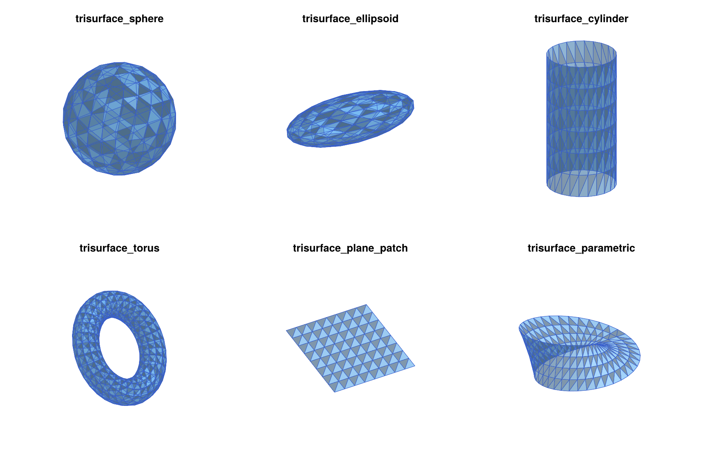
Spheres and ellipsoids. The function trisurface_sphere creates an icosphere: An icosahedron whose triangles are subdivided n times, with all new vertices projected onto the sphere. This gives 10*4^n+2 vertices and 20*4^n triangles of nearly equal size and shape, which is much better than a triangulation based on spherical coordinates with its crowded poles. The function trisurface_ellipsoid scales such an icosphere along the coordinate axes:
V, T = trisurface_sphere([0,0,0], 1.0, 2) # center, radius, n
length(V), length(T) # (162, 320)
V, T = trisurface_ellipsoid([0,0,0], [2.0,1.0,0.5], 2) # center, semi-axes, nCylinders. The function trisurface_cylinder creates a cylinder of radius r around the segment from p0 to p1, which can have any direction. The lateral surface is divided into ntheta parts around the axis and nz parts along it. By default, both ends are closed by triangle fans, which gives a closed surface. With capped=false, the result is an open tube, as in the figure of the six surface generators:
V, T = trisurface_cylinder([0,0,-1], [0,0,1], 0.5, 24, 6) # closed
V, T = trisurface_cylinder([0,0,-1], [0,0,1], 0.5, 24, 6; capped=false) # tubeTori. The function trisurface_torus expects the center, the major radius R (the distance from the center to the center of the tube), the minor radius r (the radius of the tube), and the numbers of subdivisions nu around the axis and nv around the tube. The axis of rotational symmetry is the z-axis by default, but it can be changed with the optional argument axis. The torus in the figure of the six surface generators was created with a tilted axis:
V, T = trisurface_torus([0,0,0], 2.0, 0.6, 32, 12; axis=[1,0,1])Plane patches. The function trisurface_plane_patch creates the parallelogram of all points origin + s*u + t*v with s and t in the unit interval, subdivided into nu times nv small parallelograms, each of which is split into two triangles. Its normal vector points in the direction of the cross product of u and v. The following command creates the patch in the figure of the six surface generators, which is not parallel to any coordinate plane:
V, T = trisurface_plane_patch([-1,-1,0], [2,0,0], [0.5,2,0.5], 8, 8)General parametric surfaces. The function trisurface_parametric triangulates the image of an arbitrary function f(u,v) over a parameter rectangle. The rectangle urange x vrange is divided into nu times nv subrectangles, each of which is split into two triangles. Periodic parametrizations are handled with the optional arguments uperiodic and vperiodic, which glue the corresponding edges of the parameter rectangle together. In addition, all vertices which are closer than tol (default 1e-10) are merged, and triangles which become degenerate are removed. The value of tol has to be positive, and since it is an absolute distance, it has to be scaled with the size of the surface. For a surface of diameter 1e10, for example, rounding errors in the coordinates are of the order 1e-6, and points such as the poles of a sphere are only merged with a correspondingly larger tol. The seams of uperiodic and vperiodic are glued by construction, independently of tol. As an example, the following commands create a unit sphere in spherical coordinates:
fsph(u,v) = [cos(u)*sin(v), sin(u)*sin(v), cos(v)]
V, T = trisurface_parametric(fsph, (0,2*pi), (pi,0), 24, 12; uperiodic=true)
length(V), length(T) # (266, 528)Here, uperiodic=true glues the seam at u=0 and u=2*pi, and all vertices at the two poles are merged automatically. The triangles are oriented by the cross product of the partial derivatives of f with respect to u and v, so the range (pi,0) for v, which runs from the south pole to the north pole, gives outward normals. Merging close vertices also handles orientation-reversing gluings. The Möbius strip in the figure of the six surface generators was created with the commands
fmoebius(u,v) = [(1+v/2*cos(u/2))*cos(u), (1+v/2*cos(u/2))*sin(u), v/2*sin(u/2)]
V, T = trisurface_parametric(fmoebius, (0,2*pi), (-1,1), 40, 4)Since fmoebius(2*pi,v) == fmoebius(0,-v), the two ends of the strip are glued with a twist, even though uperiodic is not set.
Since close vertices are merged, any self-intersection of the surface which passes through grid vertices is turned into an identification. For example, the usual figure-eight immersion of the Klein bottle in three dimensions intersects itself along a circle, and the resulting complex is not a Klein bottle. Moreover, a non-orientable surface such as the Möbius strip cannot be consistently oriented. It can be used as a constraint surface for the mesh generators, but it cannot bound a hole or a region.
Surfaces as complexes. Every triangulated surface can be turned into a two-dimensional simplicial complex embedded in three dimensions with tetmesh_to_euclidean. This is a convenient way to check the topology of a surface:
homology(tetmesh_to_euclidean(trisurface_sphere([0,0,0], 1.0, 2)...))
# [1, 0, 1]
homology(tetmesh_to_euclidean(trisurface_torus([0,0,0], 2.0, 0.6, 32, 12)...))
# [1, 2, 1]
homology(tetmesh_to_euclidean(trisurface_cylinder([0,0,-1], [0,0,1], 0.5, 16, 4)...))
# [1, 0, 1]
homology(tetmesh_to_euclidean(trisurface_cylinder([0,0,-1], [0,0,1], 0.5, 16, 4;
capped=false)...))
# [1, 1, 0]
homology(tetmesh_to_euclidean(trisurface_plane_patch([-1,-1,0], [2,0,0],
[0,2,0], 8, 8)...))
# [1, 0, 0]
homology(tetmesh_to_euclidean(trisurface_parametric(fmoebius, (0,2*pi),
(-1,1), 40, 4)...))
# [1, 1, 0]Orientation of Surfaces
The triangles of a surface have an orientation, which is easy to get wrong for surfaces which are not created by the trisurface_* functions, for example surfaces read from a file or assembled by hand. The orientation is needed in exactly one situation, namely when a closed surface is added to a TetGen domain with tetgen_domain_add_surface and the option hole=true or region=(attr, maxvol). In all other situations, it is ignored. This section explains what the orientation is, what it means for a surface to be consistently oriented, and why and when this matters.
The orientation of a triangle. A triangle is given by the list of its three vertex indices, such as [a, b, c]. The order of this list determines a direction in which the boundary of the triangle is traversed, namely from a to b, from b to c, and from c back to a. This direction is the orientation of the triangle. Only the cyclic order of the vertices matters:
- The lists
[a, b, c],[b, c, a], and[c, a, b]describe the same closed path with different starting points, and therefore have the same orientation. - The list
[a, c, b] = reverse([a, b, c])traverses the boundary in the opposite direction, and therefore has the opposite orientation. The same holds for any list which is obtained by exchanging two vertices.
Every triangle therefore has exactly two orientations, and reverse switches between them. This is the same notion as the orientation of a simplex in the chapter on Lefschetz Complexes, where two orientations are equivalent if they differ by an even permutation of the vertices. For a triangle, the even permutations are exactly the cyclic shifts.
The normal vector. The orientation of a triangle [a, b, c] determines a normal vector, namely the cross product
n = cross(b - a, c - a)which is perpendicular to the triangle. Its direction is given by the right-hand rule: If the fingers of the right hand curl in the direction from a to b to c, then the thumb points in the direction of n. Equivalently, if the triangle is viewed from the side into which n points, then its vertices appear in counterclockwise order. For example, the triangle with the vertices a = [0,0,0], b = [1,0,0], and c = [0,1,0] has the normal vector [0,0,1], and seen from above, the path from a to b to c is counterclockwise. Reversing the triangle to [a, c, b] gives the normal vector [0,0,-1]. Thus, choosing an orientation of a triangle is the same as choosing one of its two sides. The same rule applies to the planar polygons with more than three vertices which are used as facets in a TetDomain. For example, the bottom face [1, 4, 3, 2] of the unit box created by tetgen_domain_box has the vertices (0,0,0), (0,1,0), (1,1,0), and (1,0,0) in this order. Seen from above, this path is clockwise, so the normal vector points downward and out of the box.
Consistently oriented surfaces. A triangulated surface is consistently oriented if any two triangles which share an edge traverse this edge in opposite directions. If one triangle contains the step from vertex 3 to vertex 5, then its neighbor across this edge has to contain the step from 5 to 3. Geometrically, this means that the normal vectors of neighboring triangles point to the same side of the surface, so that the normals of the whole surface point to one side of it. As an example, consider the boundary of the tetrahedron with the vertices (0,0,0), (1,0,0), (0,1,0), and (0,0,1):
using LinearAlgebra
Vt = [[0,0,0], [1,0,0], [0,1,0], [0,0,1]]
Tt = [[1,3,2], [1,4,3], [1,2,4], [2,3,4]]
[cross(Vt[t[2]] - Vt[t[1]], Vt[t[3]] - Vt[t[1]]) for t in Tt]
# [[0, 0, -1], [-1, 0, 0], [0, -1, 0], [1, 1, 1]]Every edge occurs once in each direction. For example, the edge between the vertices 1 and 3 is traversed from 1 to 3 in the first triangle, and from 3 to 1 in the second one. All four normal vectors point out of the tetrahedron. If a single triangle is reversed, then two of its edges are traversed in the same direction as in the neighboring triangles, and the surface is no longer consistently oriented. A connected orientable surface has exactly two consistent orientations, which are obtained from each other by reversing all triangles. A non-orientable surface, such as the Möbius strip, has no consistent orientation at all.
Outward and inward normals. For a closed and consistently oriented surface, the normal vectors either all point out of the enclosed volume, or they all point into it. The two cases can be distinguished by the signed volume
vol = sum(dot(V[t[1]], cross(V[t[2]], V[t[3]])) for t in T) / 6whose absolute value is the volume enclosed by the surface. It is positive for outward normals and negative for inward normals. For the tetrahedron above, only the last triangle contributes, and its contribution 1/6 is the volume of the tetrahedron. All closed surfaces created by the trisurface_* functions have outward normals.
When the orientation is needed. TetGen itself does not use the orientation of facets at all. For TetGen, a facet is a two-sided wall which tetrahedra cannot cross, and holes and regions are identified by points inside them, see Describing a Domain below. Such a point does not depend on any orientation. The orientation is only needed when the package has to find such a point by itself:
- Orientation matters:
tetgen_domain_add_surfacewithhole=trueor withregion=(attr, maxvol). In this case, a point inside the surface is computed automatically. The function determines the sign of the signed volume, starts at the center of the largest triangle, and follows the normal vector of this triangle into the enclosed volume until the next surface is hit. The midpoint of this segment is used as the hole or region point. This only works if the surface is closed and consistently oriented, which is therefore checked, and anArgumentErroris raised otherwise, see the section on Holes. Since the sign of the signed volume is taken into account, outward normals and inward normals work equally well. A surface with mixed normals, on the other hand, has no well-defined inside direction, and is rejected. - Orientation does not matter: Everything else. This includes
tetgen_domain_add_surfacewithoutholeandregion, where the surface is only a constraint,tetgen_domain_from_surface, which only requires a closed surface,tetgen_domain_add_holeandtetgen_domain_add_region, where the point is given explicitly, as well astetmesh_to_euclidean, which creates the same complex for every orientation of the triangles, and the plotting functions, which orient the drawn triangles themselves.
In particular, a surface whose orientation is inconsistent can still bound a hole or a region, as long as a point inside it is known. It is then added without hole or region, and the point is given explicitly:
V, T = trisurface_sphere([0,0,0], 1.0, 2)
Tflip = deepcopy(T)
Tflip[1] = reverse(Tflip[1]) # one triangle with the wrong orientation
dom = tetgen_domain_box([-2,-2,-2], [2,2,2])
dom = tetgen_domain_add_surface(dom, V, Tflip)
dom = tetgen_domain_add_hole(dom, [0,0,0])
homology(tetgen_to_simplicial(tetgen_mesh(dom; maxvolume=0.05)))
# [1, 0, 1, 0]Orientation of the generated surfaces. The surface generators use the following conventions:
trisurface_sphere,trisurface_ellipsoid,trisurface_torus, andtrisurface_cylinderwith the defaultcapped=truecreate closed surfaces with outward normals.trisurface_plane_patchcreates triangles whose normal vectors point in the direction ofcross(u, v).trisurface_parametriccreates triangles whose normal vectors point in the direction of the cross product of the partial derivatives offwith respect touandv. Reversing one of the two parameter ranges reverses the orientation. This is why the sphere in spherical coordinates above uses the range(pi,0)forv: The range(0,pi)would give inward normals. Both versions can bound a hole or a region.tetgen_domain_boxcreates the six faces of the box with outward normals.
Reversing all triangles of a surface, as in [reverse(t) for t in T], switches between outward and inward normals. For holes and regions, this is never necessary. If a surface is not consistently oriented, however, reversing all triangles does not help. In that case, the triangles have to be reoriented one by one, starting from one triangle and reversing each neighbor which traverses a shared edge in the same direction, or the hole or region point has to be given explicitly, as shown above.
TetGen.jl: Tetrahedral Meshes
The TetGen.jl package is a Julia interface to Hang Si's mesh generator TetGen. It creates constrained Delaunay tetrahedralizations, see Basic Notions, and quality tetrahedral meshes of three-dimensional domains. A domain is described as a piecewise linear complex: A collection of points, together with planar polygons, segments, and single points (the facets) which have to be contained in the final mesh. Note that the word facet is used here in the sense of TetGen, which differs from the facets of a simplex in the Tutorial. The outer facets bound the domain, and facets inside the domain are constraints. In addition, holes and regions can be specified by points inside them. This data model maps directly onto the DelaunayTriangulation.jl workflow in the plane described in the Two-Dimensional Meshes chapter, and the extension follows the same pattern:
- Describe the domain by a
TetDomain. Such a domain is usually created withtetgen_domain_boxor withtetgen_domain_from_surface, and then extended with the othertetgen_domain_*functions. - Create the mesh with
tetgen_mesh, which returns aTetGenResult. - Convert the mesh with
tetgen_to_simplicial, and find the cells on constraint surfaces and curves, or in regions, withtetgen_marker_cellsandtetgen_region_cells.
Only tetgen_mesh and create_simplicial_delaunay3d require TetGen.jl, which has to be installed and loaded as described in Loading the Required Packages. Note that TetGen is distributed under the GNU Affero General Public License, see Licences of the Meshing Backends below.
Describing a Domain
A TetDomain is a plain Julia struct with five fields:
points: The vertices of the domain description, as tuples of three numbers,facets: The facets, each given by a vector of indices intopoints. A facet with at least three vertices is a planar polygon, a facet with two vertices is a segment, and a facet with one vertex is a single point,markers: An integer marker for every facet,holes: One point inside every hole, andregions: For every region, a point inside it, an integer attribute, and a maximal tetrahedron volume.
The markers identify the different parts of the domain description after meshing. By convention, the outer boundary has marker 0, and the constraint surfaces and curves are numbered 1, 2, 3, ... in the order in which they are added. The tetgen_domain_* functions never change their argument, but return a new TetDomain. A domain can therefore be extended step by step, and intermediate versions can be reused.
The simplest domain is a box. The function tetgen_domain_box expects the lower and upper corners, and it creates the eight corners and the six faces of the box as quadrilateral facets with outward orientation:
dom = tetgen_domain_box([-1.5,-1,-1], [1.5,1,1])
# TetDomain with 8 points, 6 facets, markers [0], 0 holes, 0 regions
dom.facets
# [[1, 4, 3, 2], [5, 6, 7, 8], [1, 2, 6, 5], [2, 3, 7, 6], [3, 4, 8, 7], [4, 1, 5, 8]]
dom.markers
# [0, 0, 0, 0, 0, 0]The one-line summary shown above is printed whenever a TetDomain is displayed in the REPL. It is a quick way to check that every added constraint received the intended marker.
The numbers of holes and regions in this summary are easily misunderstood. Closed surfaces divide the domain into several parts, which we call chambers, since tetrahedra cannot cross facets. A box with a sphere inside, for example, has two chambers, namely the inside of the sphere and the box minus the ball. Without further instructions, TetGen meshes all chambers. The fields holes and regions attach instructions to individual chambers, each of which is identified by a point inside it:
- A hole point means that the chamber containing it is removed.
- A region point means that the chamber containing it is kept, its tetrahedra receive an integer attribute, and they can optionally be given their own maximal volume.
A region in the sense of TetGen is therefore not a chamber, but a label which is attached to a chamber. The summary counts these instructions, i.e., it shows length(dom.holes) and length(dom.regions), and not the number of chambers. A box with a spherical hole, as in the section on Holes below, has two chambers, but the summary reads 1 holes, 0 regions: One chamber is removed, and the other one is meshed without a label. Labels are needed only for local refinement and for finding the tetrahedra of a chamber after meshing, as described in Regions and Local Refinement. As soon as at least one region is specified, TetGen labels all chambers, and the chambers without a region point receive attributes which it chooses itself. Without any region points, no attributes are assigned at all.
Meshing a Box
The domain is meshed with tetgen_mesh. Without any further arguments, TetGen only performs a mild quality refinement, and since the box contains no constraints, the result is the coarsest possible tetrahedralization:
res = tetgen_mesh(dom)
length(res.points), length(res.tetrahedra) # (8, 6)The optional argument maxvolume bounds the volume of the tetrahedra, and it is the main way of controlling the size of the mesh. The volume of the box is 12, so the following mesh has about two thousand tetrahedra:
res = tetgen_mesh(dom; maxvolume=0.01)
length(res.points), length(res.tetrahedra) # (532, 2207)
ec = tetgen_to_simplicial(res)
lefschetz_cell_count(ec) # [532, 3051, 4727, 2207]
homology(ec) # [1, 0, 0, 0]The function tetgen_to_simplicial converts the mesh into an EuclideanComplex, using the labeling scheme of tetmesh_to_euclidean. As usual, the optional argument p selects the coefficient field. The resulting mesh is shown in the figure of the tetrahedral mesh of a box, both as a whole and clipped at the plane y = 0, which reveals the tetrahedra in the interior.
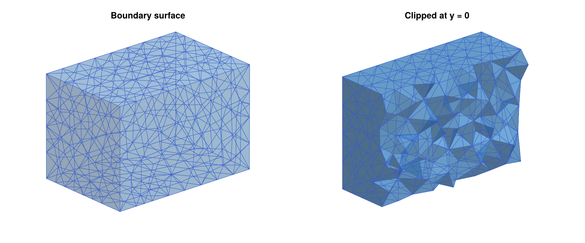
The returned TetGenResult contains the raw mesh in its fields points (the vertex coordinates, including all points inserted by TetGen), tetrahedra (vectors of four indices into points), trifaces and trifacemarkers (the triangles on all facets of the domain, together with their markers), tetattributes (the region attributes of the tetrahedra), and curvesegments (the constraint curves). These fields are usually only accessed through the functions described below, but they can be useful for exporting a mesh to other software.
TetGen treats volume bounds as targets rather than strict limits. In typical meshes, about one percent of the tetrahedra exceed maxvolume, by up to about fifty percent. For the box mesh above, the largest tetrahedron has volume 0.0129. If a strict bound is required, pass a correspondingly smaller value.
Mesh Size and Quality
Besides maxvolume, the function tetgen_mesh accepts the following optional arguments:
minratio: An upper bound for the radius-edge ratio of the tetrahedra, see Basic Notions. This ratio is the standard quality measure ofTetGen, and well-shaped tetrahedra have small ratios. The default value1.414(approximatelysqrt(2)) is the standard value ofTetGen. Smaller values lead to more refinement. Even though a regular tetrahedron has the ratio0.61, the refinement algorithm ofTetGenis only guaranteed to terminate for bounds which are not too small. Values below1are therefore rejected with anArgumentError(withminratio=0.8,TetGenwas still running after two minutes in our tests), and values close to1lead to very fine meshes.mindihedral: A lower bound for the dihedral angles of the tetrahedra, in degrees, strictly between0and90, see Basic Notions. It is used in addition tominratio. Ifminratio=nothing, the ratio bound2.0is used together with it.TetGentreats this bound as a goal, but it does not guarantee it. In the table below, the mesh created withmindihedral=15still contains a dihedral angle of2.33°. Large values can makeTetGenfail. On the box,mindihedral=30works, butmindihedral=50leads to an error.steiner_on_boundary: WhetherTetGenmay insert additional points on the boundary and on constraint facets. Points which are added by the mesh generator, rather than given by the user, are called Steiner points. They are needed both to satisfy the quality bounds and to split long boundary edges. This istrueby default.quiet: Whether the output ofTetGenis suppressed. Passingquiet=falseprints the statistics of the mesh generation.switches: A completeTetGencommand line switch string, which overrides all other optional arguments.
Passing minratio=nothing without mindihedral switches the quality refinement off. The following table shows the effect of these options on the box mesh from above, always with maxvolume=0.01. The last column contains the smallest dihedral angle in the mesh:
| Optional arguments | Points | Tetrahedra | Smallest angle |
|---|---|---|---|
minratio=nothing | 511 | 2159 | 5.86° |
| (defaults) | 532 | 2207 | 1.86° |
minratio=1.2 | 547 | 2243 | 4.61° |
mindihedral=15 | 608 | 2528 | 2.33° |
steiner_on_boundary=false | 8 | 6 | 25.24° |
The table illustrates two points which are important in practice. First, the quality bounds of TetGen remove most badly shaped tetrahedra, but they do not guarantee the absence of slivers. These are flat tetrahedra with four nearly coplanar vertices, whose radius-edge ratio can be small even though their dihedral angles are close to 0° or 180°. A few such tetrahedra are harmless for the construction of multivector fields. Second, disallowing Steiner points on the boundary is a strong restriction. Since no boundary triangle may be split, TetGen cannot insert any point whose neighborhood reaches the boundary. In a coarse box, every tetrahedron touches the boundary, and therefore no refinement takes place at all, and even the volume constraint is ignored. This option is only useful if the boundary is already fine, or together with interior nodes as in the next section.
The switch string gives access to all options of TetGen. With maxvolume=0.01 and default values for all other optional arguments, tetgen_mesh calls TetGen with the switches pq1.414a0.01Q, where p tells TetGen to respect the facets, q sets the quality bound, a the volume bound, and Q suppresses the output. The command
res = tetgen_mesh(dom; switches="pq1.2a0.01Q")gives the same mesh as minratio=1.2. The switch string should always contain p, and it should never contain f, since otherwise interior triangles are reported with marker 0, which breaks tetgen_marker_cells. See the TetGen manual for a description of all switches.
Adding Interior Nodes
The function tetgen_domain_add_nodes adds points which become vertices of the final mesh. This gives direct control over the vertex distribution. For example, a Poisson-disk sample gives a mesh whose vertices are evenly spread throughout the domain:
using Random
nodes = poisson_points_box([-1.4,-0.9,-0.9], [1.4,0.9,0.9], 0.3;
rng=Xoshiro(1234))
length(nodes) # 223
domn = tetgen_domain_add_nodes(dom, nodes)
# TetDomain with 231 points, 6 facets, markers [0], 0 holes, 0 regions
res = tetgen_mesh(domn; minratio=nothing)
length(res.points), length(res.tetrahedra) # (231, 1374)
res = tetgen_mesh(domn)
length(res.points), length(res.tetrahedra) # (409, 2129)Without quality refinement, the mesh is the constrained Delaunay tetrahedralization of exactly the given points. With the default quality bound, TetGen adds further points, mostly close to the boundary, where the sample is less regular. Note that the sample was taken in a slightly smaller box, so that no node lies too close to the boundary. Nodes outside of the domain or inside holes are ignored, and nodes which coincide with existing vertices are merged with them. However, a node must not lie exactly on a face or an edge of the boundary or of a constraint, unless it is one of the vertices there, since TetGen then reports a self-intersection and fails. Combined with steiner_on_boundary=false, interior nodes do allow refinement, while the boundary stays as coarse as it is:
res = tetgen_mesh(domn; steiner_on_boundary=false, maxvolume=0.01)
length(res.points), length(res.tetrahedra) # (672, 3913)
length(res.trifaces) # 12Constraint Surfaces and Curves
The main reason for using a mesh generator rather than a regular grid is the ability to adapt the mesh to geometric features. In the context of dynamics, these are often invariant manifolds, isolating blocks, or surfaces on which the vector field is known to be transverse. The function tetgen_domain_add_surface adds a triangulated surface whose triangles become facets of the domain, so that the final mesh contains the surface as a union of its triangles. Similarly, tetgen_domain_add_curve adds a polygonal curve whose segments become edges of the final mesh. The following example embeds a sphere, a closed square curve above it, and a short open segment below it into a box:
dom2 = tetgen_domain_box([-2,-2,-2], [2,2,2])
V, T = trisurface_sphere([0,0,0], 1.0, 2)
dom2 = tetgen_domain_add_surface(dom2, V, T) # marker 1
square = [[-1.8,-1.8,1.5], [1.8,-1.8,1.5], [1.8,1.8,1.5],
[-1.8,1.8,1.5], [-1.8,-1.8,1.5]]
dom2 = tetgen_domain_add_curve(dom2, square) # marker 2
spoke = [[0.0,0.0,-1.8], [0.0,0.0,-1.3]]
dom2 = tetgen_domain_add_curve(dom2, spoke; marker=7) # marker 7
# TetDomain with 176 points, 331 facets, markers [0, 1, 2, 7], 0 holes, 0 regions
res2 = tetgen_mesh(dom2; maxvolume=0.05)
ec2 = tetgen_to_simplicial(res2)
lefschetz_cell_count(ec2) # [950, 5616, 8865, 4198]A curve is closed if its first and last points agree, up to 1e-9 times the size of the curve. In that case, the last point is not added a second time. Repeated consecutive points and segments which occur more than once are ignored. The sphere and the square automatically received the markers 1 and 2, while the segment was given the marker 7 explicitly with the optional argument marker. Explicit markers are useful if several surfaces or curves form one geometric object: They can all be given the same marker, and they are then treated as one constraint.
After meshing, the function tetgen_marker_cells returns the indices of all cells of the complex which lie on the constraints with a given marker. By default, the result is the closure of the triangles on the constraint surfaces and the edges on the constraint curves, i.e., a closed subcomplex. Extracting these subcomplexes shows that the mesh contains a sphere, a circle, and an arc:
sphere_cells = tetgen_marker_cells(res2, ec2, 1)
square_cells = tetgen_marker_cells(res2, ec2, 2)
spoke_cells = tetgen_marker_cells(res2, ec2, 7)
homology(lefschetz_subcomplex(ec2, sphere_cells)) # [1, 0, 1]
homology(lefschetz_subcomplex(ec2, square_cells)) # [1, 1]
homology(lefschetz_subcomplex(ec2, spoke_cells)) # [1, 0]The mesh and the constraint cells are shown in the figure of the sphere and the two curves embedded as constraints. The left panel shows the mesh clipped at the plane x = 0, together with the part of the sphere in the remaining half. The right panel shows only the constraint cells. Note that TetGen subdivided the long edges of the square, but the sphere triangles and the short segment remained intact, since their size is comparable to the mesh size inside the box.
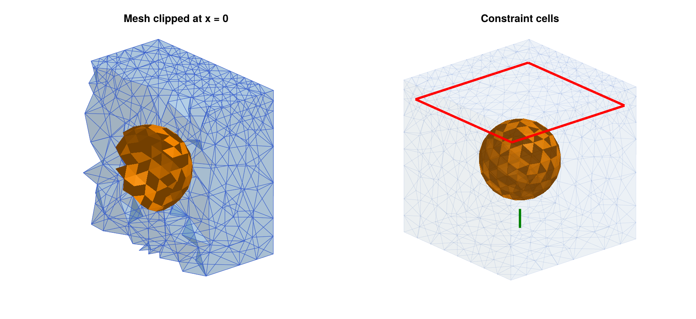
With the optional argument closure=false, only the cells of maximal dimension on the constraint are returned, i.e., the triangles of the constraint surfaces and the edges of the constraint curves:
sphere_tris = tetgen_marker_cells(res2, ec2, 1; closure=false)
length(sphere_tris), unique(ec2.dimensions[sphere_tris]) # (320, [2])The marker 0 gives the outer boundary of the domain. This makes it easy to work with exit sets or relative homology. Recall from the section Relative Homology that the relative homology of a complex with respect to a closed subcomplex measures the shape of the complex if the subcomplex is collapsed to a single point. For the box mesh from the section Meshing a Box, the boundary is a sphere, and collapsing the boundary of a solid box to a point gives a three-dimensional sphere. Accordingly, the relative homology has a single nonzero entry in dimension three. The second argument of homology restricts the computation to the given closed subcomplex:
resbox = tetgen_mesh(tetgen_domain_box([-1.5,-1,-1], [1.5,1,1]); maxvolume=0.01)
ecbox = tetgen_to_simplicial(resbox)
bnd = tetgen_marker_cells(resbox, ecbox, 0)
homology(ecbox, bnd) # [1, 0, 1, 0], the homology of the boundary
relative_homology(ecbox, bnd) # [0, 0, 0, 1]The faces of a box can also be given individual markers with the optional argument markers of tetgen_domain_box, in the order x = bmin[1], x = bmax[1], y = bmin[2], y = bmax[2], z = bmin[3], and z = bmax[3]. This is useful for exit sets. For example, the linear vector field (x1, -x2, -x3) has a saddle at the origin, and it leaves the cube [-1,1]^3 exactly through the two faces x1 = -1 and x1 = 1. These two faces form the exit set of the cube, and by Conley theory, the relative homology of the cube with respect to its exit set is the Conley index of the saddle:
domx = tetgen_domain_box([-1,-1,-1], [1,1,1]; markers=[1,1,0,0,0,0])
# TetDomain with 8 points, 6 facets, markers [0, 1], 0 holes, 0 regions
resx = tetgen_mesh(domx; maxvolume=0.02)
ecx = tetgen_to_simplicial(resx)
exitset = tetgen_marker_cells(resx, ecx, 1)
homology(lefschetz_subcomplex(ecx, exitset)) # [2, 0, 0], two squares
relative_homology(ecx, exitset) # [0, 1, 0, 0]The same Conley index is obtained from the multivector field of the vector field, using remove_exit_set, which determines the exit set automatically:
saddlevf(x) = [x[1], -x[2], -x[3]]
lcr, mvfr = remove_exit_set(ecx, create_spatial_mvf(ecx, saddlevf))
connection_matrix(lcr, mvfr).conley # [[0, 1, 0, 0]]The complex passed to tetgen_marker_cells has to be the one created from the given mesh by tetgen_to_simplicial. This is checked by comparing the vertex coordinates, and an ArgumentError is raised for a mismatch, such as a complex from a different mesh.
TetGen requires that all facets intersect only in common vertices and edges. Vertices of a new surface or curve which coincide exactly with existing points of the domain are identified with them, so surfaces can share boundary curves if they are created with the same vertex coordinates. Apart from this, constraint surfaces must not cross each other, and they must not touch the outer boundary. In particular, a surface whose boundary curve lies in a face of the box, such as an open cylinder whose ends are on two opposite faces, is rejected, since its boundary curve is not made of edges of the box facets. Similarly, a constraint curve cannot lie inside a face of the box, although it can run along an edge of the box. Curves outside of the domain are ignored by TetGen, and tetgen_mesh prints a warning in this case. For intersecting geometry, use Gmsh.jl instead, see Gmsh.jl: Complex and Intersecting Geometry.
Holes
A closed constraint surface can be turned into the boundary of a hole by passing hole=true to tetgen_domain_add_surface. The interior of the surface is then not meshed:
dom3 = tetgen_domain_box([-2,-2,-2], [2,2,2])
dom3 = tetgen_domain_add_surface(dom3, V, T; hole=true)
ec3 = tetgen_to_simplicial(tetgen_mesh(dom3; maxvolume=0.05))
homology(ec3) # [1, 0, 1, 0]For the above code segment, recall that V and T are the vertices and triangles of a spherical surface.
TetGen identifies holes by a point inside them, which it then uses to remove all tetrahedra that can be reached from this point without crossing a facet. With hole=true, such a point is determined automatically: Starting at the center of the largest triangle of the surface, a ray is followed in the direction of the inward normal until it hits the surface again, and the midpoint of this segment is used. This requires a closed and consistently oriented surface, as created by the trisurface_* functions, and both outward and inward normals are fine, see Orientation of Surfaces. The point is stored in the field holes of the domain. Holes of any topology are possible, such as the toroidal hole in the right panel of the figure of the domains with holes:
Vh, Th = trisurface_torus([0,0,0], 1.2, 0.4, 32, 12)
dom5 = tetgen_domain_box([-2,-2,-2], [2,2,2])
dom5 = tetgen_domain_add_surface(dom5, Vh, Th; hole=true)
ec5 = tetgen_to_simplicial(tetgen_mesh(dom5; maxvolume=0.05))
homology(ec5) # [1, 1, 1, 0]The automatically chosen point refers to the chamber enclosed by the surface at the time it is added. The ray stops at all surfaces which are already part of the domain, so a hole surface around a previously added surface removes only the space between the two. If further surfaces are placed inside a hole surface later, however, the hole point might end up in the wrong region. Consider two concentric spheres. Adding the outer sphere with hole=true creates a hole point at the origin. After adding the inner sphere, this point lies inside the inner ball, and only the inner ball is removed:
V1, T1 = trisurface_sphere([0,0,0], 1.0, 2)
V2, T2 = trisurface_sphere([0,0,0], 0.5, 1)
domw = tetgen_domain_box([-2,-2,-2], [2,2,2])
domw = tetgen_domain_add_surface(domw, V1, T1; hole=true)
domw = tetgen_domain_add_surface(domw, V2, T2)
domw.holes # [(-1.1e-16, -2.8e-16, 0.0)]
homology(tetgen_to_simplicial(tetgen_mesh(domw; maxvolume=0.05)))
# [1, 0, 1, 0]In such cases, the inner surface should be added first, or the hole point should be given explicitly with tetgen_domain_add_hole. The following commands remove the spherical shell between the two spheres, and adding V2, T2 first and then V1, T1 with hole=true gives the same result. The resulting mesh consists of two components, namely the inner ball and the box with a spherical cavity, as the middle panel of the figure of the domains with holes shows:
dom4 = tetgen_domain_box([-2,-2,-2], [2,2,2])
dom4 = tetgen_domain_add_surface(dom4, V1, T1)
dom4 = tetgen_domain_add_surface(dom4, V2, T2)
dom4 = tetgen_domain_add_hole(dom4, [0.75,0,0])
ec4 = tetgen_to_simplicial(tetgen_mesh(dom4; maxvolume=0.05))
homology(ec4) # [2, 0, 1, 0]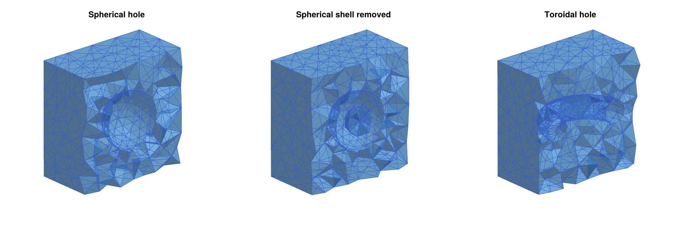
A hole point must lie in a chamber which is completely enclosed by facets. Otherwise, TetGen removes everything that can be reached from it, which is usually the whole domain. Holes and regions also require closed and consistently oriented surfaces, which is checked when the surface is added:
Vp, Tp = trisurface_plane_patch([-1,-1,0], [2,0,0], [0,2,0], 4, 4)
tetgen_domain_add_surface(dom3, Vp, Tp; hole=true)
# ERROR: ArgumentError: tetgen_domain_add_surface: holes and regions
# require a closed surface
Tflip = deepcopy(T)
Tflip[1] = reverse(Tflip[1]) # one triangle with the wrong orientation
tetgen_domain_add_surface(dom3, V, Tflip; hole=true)
# ERROR: ArgumentError: tetgen_domain_add_surface: holes and regions
# require a consistently oriented surfaceA surface may consist of several connected components. In that case, a hole point is determined for every component, so that all of them become holes. For example, two disjoint spheres combined into a single surface give two cavities:
Va, Ta = trisurface_sphere([ 1.0,0,0], 0.5, 2)
Vb, Tb = trisurface_sphere([-1.0,0,0], 0.5, 2)
VV = vcat(Va, Vb)
TT = vcat(Ta, [t .+ length(Va) for t in Tb])
dom8 = tetgen_domain_add_surface(tetgen_domain_box([-2,-2,-2], [2,2,2]),
VV, TT; hole=true)
# TetDomain with 332 points, 646 facets, markers [0, 1], 2 holes, 0 regions
homology(tetgen_to_simplicial(tetgen_mesh(dom8; maxvolume=0.05)))
# [1, 0, 2, 0]The same applies to regions. For nested components within one surface, such as two concentric spheres, both the inner ball and the shell between the spheres become holes. To remove only the shell, add the spheres separately, as shown above.
Regions and Local Refinement
Instead of removing the inside of a closed surface, one can declare it a region. Every tetrahedron in a region receives an integer attribute, and every region can have its own maximal tetrahedron volume. This is the standard way of refining a mesh locally, for example close to the equilibria of a vector field. With tetgen_domain_add_surface, a region is created by passing region=(attr, maxvol):
dom6 = tetgen_domain_box([-2,-2,-2], [2,2,2])
dom6 = tetgen_domain_add_surface(dom6, V, T; region=(1, 0.002))
res6 = tetgen_mesh(dom6; maxvolume=0.1)
ec6 = tetgen_to_simplicial(res6)
lefschetz_cell_count(ec6) # [1467, 10212, 17276, 8530]
unique(res6.tetattributes) # [1, 2]Inside the unit sphere, the tetrahedra have volume at most 0.002, while the global bound 0.1 applies everywhere else, both up to the tolerance described in the note on volume constraints above. Note that the second attribute 2 was not specified by us. TetGen assigns new attributes, larger than all given ones, to all parts of the domain which do not contain a region point. Here, this is the part of the box outside of the sphere. The function tetgen_region_cells returns the tetrahedra with a given attribute, by default together with all their faces:
inner = tetgen_region_cells(res6, ec6, 1)
outer = tetgen_region_cells(res6, ec6, 2)
count(==(3), ec6.dimensions[inner]) # 4048
count(==(3), ec6.dimensions[outer]) # 4482
homology(lefschetz_subcomplex(ec6, inner)) # [1, 0, 0, 0]
homology(lefschetz_subcomplex(ec6, outer)) # [1, 0, 1, 0]As before, closure=false returns only the tetrahedra. The left panel of the figure of the refined region inside a sphere shows the refined mesh, and the right panel shows the two regions in different colors.
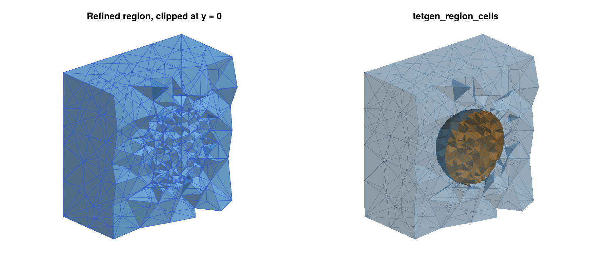
Regions can also be specified by an explicit point with tetgen_domain_add_region. Its arguments are the domain, the point, the attribute, and optionally the maximal volume. A nonpositive maximal volume, which is the default, means that only the global bound applies. The following domain gives the same mesh as above, but the outer part now has the attribute 5:
dom7 = tetgen_domain_box([-2,-2,-2], [2,2,2])
dom7 = tetgen_domain_add_surface(dom7, V, T)
dom7 = tetgen_domain_add_region(dom7, [0,0,0], 1, 0.002)
dom7 = tetgen_domain_add_region(dom7, [1.9,1.9,1.9], 5)
res7 = tetgen_mesh(dom7; maxvolume=0.1)
unique(res7.tetattributes) # [1, 5]Domains Bounded by a Surface
Not every domain is a box. The function tetgen_domain_from_surface creates a domain whose outer boundary is a closed triangulated surface. All its facets get marker 0, and the domain can then be extended in the same way as before. The following commands create a solid torus, and an ellipsoid with two spherical holes:
Vt, Tt = trisurface_torus([0,0,0], 2.0, 0.8, 48, 16)
domt = tetgen_domain_from_surface(Vt, Tt)
# TetDomain with 768 points, 1536 facets, markers [0], 0 holes, 0 regions
ect = tetgen_to_simplicial(tetgen_mesh(domt; maxvolume=0.02))
homology(ect) # [1, 1, 0, 0]
Ve, Te = trisurface_ellipsoid([0,0,0], [2.0,1.0,0.5], 3)
dome = tetgen_domain_from_surface(Ve, Te)
dome = tetgen_domain_add_surface(dome, trisurface_sphere([ 0.8,0,0], 0.3, 2)...;
hole=true)
dome = tetgen_domain_add_surface(dome, trisurface_sphere([-0.8,0,0], 0.3, 2)...;
hole=true)
ece = tetgen_to_simplicial(tetgen_mesh(dome; maxvolume=0.01))
homology(ece) # [1, 0, 2, 0]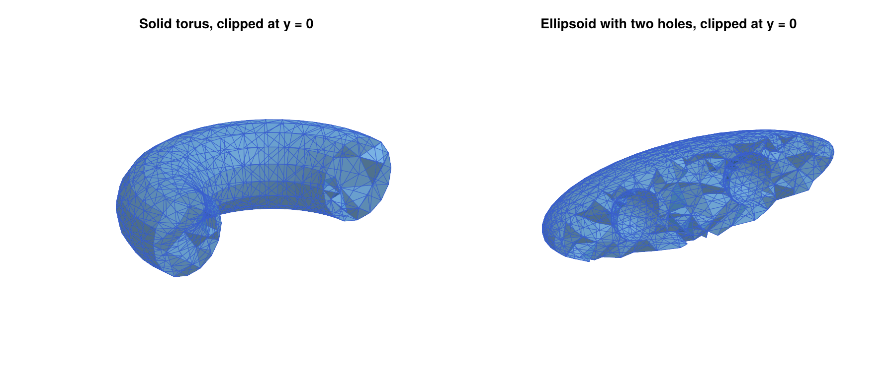
Note the splatting operator ..., which passes the pair (V, T) returned by trisurface_sphere as two separate arguments. The boundary surface has to be closed, i.e., every edge has to belong to exactly two triangles:
tetgen_domain_from_surface(trisurface_cylinder([0,0,-1], [0,0,1], 0.5, 16, 4;
capped=false)...)
# ERROR: ArgumentError: tetgen_domain_from_surface: the surface is not closedSurfaces from other sources, such as STL files, often store every triangle with its own copies of its three vertices. Both tetgen_domain_from_surface and tetgen_domain_add_surface identify vertices with the same coordinates before they check the surface, so that such surfaces can be used directly. Triangles which then have repeated vertices are rejected with an ArgumentError.
Delaunay Triangulations of Random Points
The function create_simplicial_delaunay3d computes the Delaunay tetrahedralization of a random point sample in a box, and it returns it directly as an EuclideanComplex. It is the three-dimensional analogue of the planar function create_simplicial_delaunay. There are two methods. The first one uses a Poisson-disk sample with minimum distance pdist, and the second one uses npoints uniformly distributed points:
using Random
ecd1 = create_simplicial_delaunay3d([0,0,0], [2,1,1], 0.15, 20; rng=Xoshiro(1))
lefschetz_cell_count(ecd1) # [393, 2733, 4622, 2281]
ecd2 = create_simplicial_delaunay3d([0,0,0], [2,1,1], 300; box_corners=true,
rng=Xoshiro(1))
lefschetz_cell_count(ecd2) # [308, 2239, 3858, 1926]As in the planar case, the complex covers only the convex hull of the points, and no quality refinement takes place. The convex hull of a random sample does not fill the box, and the tetrahedra close to its boundary are often very flat. The optional argument box_corners=true adds the eight corners of the box to the sample, so that the convex hull is the whole box, which explains the 308 = 300 + 8 vertices in the second example. Both complexes are shown in the figure of the Delaunay triangulations of random points, clipped at the plane y = 0.5. The optional arguments p and rng have the same meaning as before. If the minimum distance pdist is so large that the sample contains fewer than four points, an ArgumentError is raised.
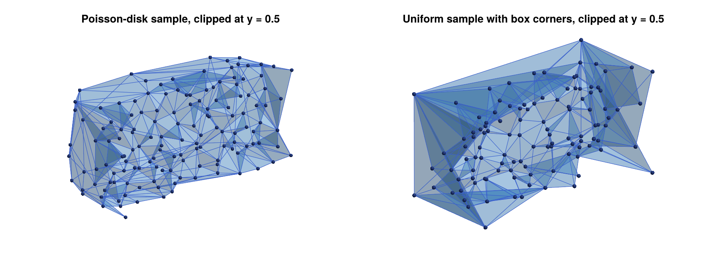
These triangulations are useful for experiments with unstructured meshes, since they are easy to create. For computations on a box, a mesh created by tetgen_mesh and tetgen_domain_box is usually the better choice, since it fills the box and has well-shaped tetrahedra.
Error Messages
When TetGen cannot mesh a domain, tetgen_mesh raises an ArgumentError with an explanation, instead of the internal error codes of TetGen. The most common reason is a constraint which intersects another constraint or the boundary. The following example adds a plane patch which crosses the embedded sphere:
Vp, Tp = trisurface_plane_patch([-1.5,-1.5,0.2], [3,0,0], [0,3,0], 4, 4)
dombad = tetgen_domain_box([-2,-2,-2], [2,2,2])
dombad = tetgen_domain_add_surface(dombad, V, T)
dombad = tetgen_domain_add_surface(dombad, Vp, Tp)
tetgen_mesh(dombad)
# ERROR: ArgumentError: tetgen_mesh: TetGen failed (TetGen error 3: a
# self-intersection was detected. ...). Possible causes are constraint
# surfaces or curves which intersect each other or the boundary (for
# intersecting geometry, use Gmsh.jl instead), nodes which lie on a
# facet or a curve, or quality bounds which are too strict, such as
# minratio close to 1 or a large mindihedral.Without the sphere, the same plane patch is a valid constraint, since it lies completely inside the box. Depending on the configuration, TetGen can also report an internal error (error code 2) for intersecting constraints, and the same internal error occurs for quality bounds which TetGen cannot achieve, such as mindihedral=50. When TetGen detects intersecting facets, it writes the debugging files tetgen-tmpfile_skipped.node and tetgen-tmpfile_skipped.face into the current directory. Since they are of no use without the TetGen command line tools, tetgen_mesh removes them again; files with these names which existed before the call are not touched. The second typical failure is a mesh without any tetrahedra, which happens if the outer boundary is not closed, or if a hole point does not lie in an enclosed region:
tetgen_mesh(tetgen_domain_add_hole(tetgen_domain_box([-2,-2,-2], [2,2,2]),
[0,0,0]))
# ERROR: ArgumentError: tetgen_mesh: the mesh contains no tetrahedra. Is the
# outer boundary closed, and does every hole point lie inside a closed
# constraint surface?Complete Example: Conley Indices on a TetGen Mesh
We close this section with a complete example, which combines a domain with refined regions, the construction of a multivector field, and a connection matrix computation. The vector field
\[\dot{x}_1 = x_1 (1 - x_1^2) , \qquad \dot{x}_2 = -x_2 , \qquad \dot{x}_3 = -x_3\]
has three equilibria at (-1,0,0), (0,0,0), and (1,0,0). The outer two are stable, and the one at the origin has a one-dimensional unstable manifold, which connects it to the two stable equilibria. The box [-1.5,1.5] x [-1,1] x [-1,1] is a trapping region, i.e., the vector field points into the box everywhere on its boundary, so that no solution leaves the box in forward time. Since the interesting dynamics is concentrated close to the equilibria, we refine the mesh in small balls around them, and keep the mesh coarse everywhere else:
using TetGen
using ConleyDynamics
function samplevf(x::Vector{Float64})
x1, x2, x3 = x
return [x1 * (1.0 - x1*x1), -x2, -x3]
end
domc = tetgen_domain_box([-1.5,-1,-1], [1.5,1,1])
for (k, c) in enumerate([[-1.0,0,0], [0.0,0,0], [1.0,0,0]])
Vk, Tk = trisurface_sphere(c, 0.25, 1)
global domc = tetgen_domain_add_surface(domc, Vk, Tk; region=(k, 0.0005))
end
resc = tetgen_mesh(domc; maxvolume=0.02)
ecc = tetgen_to_simplicial(resc)
ecc.ncells # 13607
mvfc = create_spatial_mvf(ecc, samplevf)
cmc = connection_matrix(ecc, mvfc)
cmc.conley
# 3-element Vector{Vector{Int64}}:
# [1, 0, 0, 0]
# [1, 0, 0, 0]
# [0, 1, 0, 0]
full_from_sparse(cmc.matrix)
# 3×3 Matrix{Int64}:
# 0 0 1
# 0 0 1
# 0 0 0The global keyword is needed when this loop is part of a script file, since domc is a global variable which is reassigned inside the loop. In the REPL and inside of functions, it can be omitted. The connection matrix computation finds three Morse sets. Their Conley indices are given as vectors of Betti numbers, just like homology. For a hyperbolic equilibrium with a k-dimensional unstable manifold, the Conley index has a single nonzero entry 1 in dimension k, i.e., at position k+1 of the vector. Two of the Morse sets therefore have the Conley index [1, 0, 0, 0] of an attracting equilibrium (k = 0), and the third one has the Conley index [0, 1, 0, 0] of a saddle with a one-dimensional unstable manifold (k = 1). The rows and columns of the connection matrix correspond to the nonzero entries of the Conley indices, in the order of the Morse sets. Its nonzero entries in the third column show the two connecting orbits from the saddle to the two attractors. The Morse sets are shown in the left panel of the figure of the Morse sets on a locally refined TetGen mesh, colored by their Conley indices. The right panel shows the mesh clipped at the plane y = 0, which reveals the three refined balls.
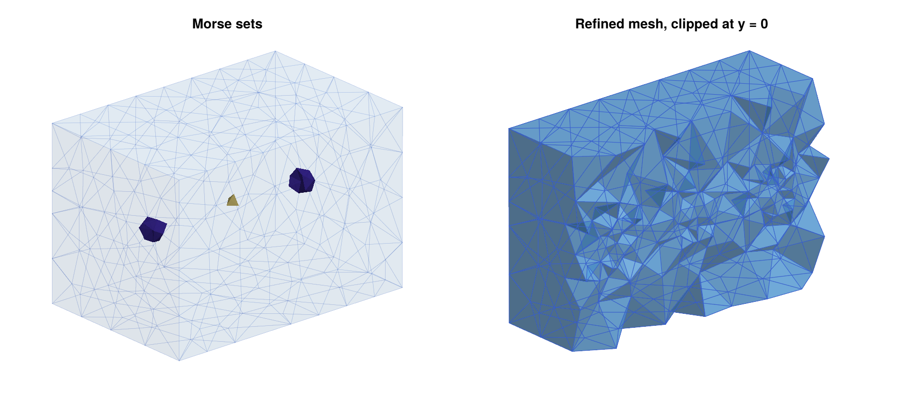
This figure was created with the following commands, using the plotting functions described in Three-Dimensional Plotting with Makie:
using CairoMakie
fig = Figure(size=(1200,550))
ax1 = Axis3(fig[1,1]; aspect=:data, title="Morse sets")
plot_simplicial3d_morse!(ax1, ecc, cmc.morse; ci=true)
ax2 = Axis3(fig[1,2]; aspect=:data, title="Refined mesh, clipped at y = 0")
plot_simplicial3d!(ax2, ecc; clip=([0,-1,0], 0.0), alpha=0.6)
for ax in (ax1, ax2)
hidedecorations!(ax)
hidespines!(ax)
end
save("meshing3d_conley.png", fig; px_per_unit=1.5)Gmsh.jl: Complex and Intersecting Geometry
Gmsh is a finite element mesh generator with a built-in CAD engine, and the Gmsh.jl package makes its complete API available in Julia. Compared to TetGen, it offers two important advantages. First, geometry is described by CAD entities such as boxes, spheres, cylinders, and arbitrary curved surfaces, rather than only by triangulations. Second, and more importantly in our context, it can compute boolean operations on such entities. In particular, it can handle constraint surfaces which intersect each other.
To see why this matters, consider a box which contains a plane at height z = 0.3, as well as a sphere around the origin intersecting it in a circle. A conforming mesh which contains both surfaces has to contain this circle as a union of edges, and the triangles of the plane and the sphere have to be split along it. TetGen cannot do this, since it requires non-intersecting facets, see the Error Messages above. Computing such an intersection by hand is a difficult problem in computational geometry. Gmsh, on the other hand, computes it with a single fragment operation, which splits all entities along their mutual intersections. The function gmsh_common_refinement performs this operation and keeps track of the resulting pieces, see Intersecting Constraint Surfaces and Common Refinements of Several Objects below.
The extension provides five functions: gmsh_to_simplicial converts the mesh of the current Gmsh model into an EuclideanComplex, gmsh_marker_cells finds the cells of physical groups and entities, gmsh_common_refinement splits intersecting objects along their intersections and keeps track of the pieces, gmsh_add_trisurface adds a triangulated surface to the model, so that it can be intersected with other objects, and gmsh_file_to_simplicial reads mesh and geometry files. Everything else, i.e., the construction of the geometry and the meshing itself, is done with the Gmsh API. Its documentation can be found on the Gmsh web page, and the examples below cover the most important commands. All of them assume that Gmsh.jl has been installed and loaded with using Gmsh: gmsh and using ConleyDynamics, as described in Loading the Required Packages. Note that Gmsh is distributed under the GNU General Public License, see Licences of the Meshing Backends below.
Basic Usage
A Gmsh session is started with gmsh.initialize() and ended with gmsh.finalize(). In between, one or more models can be created. A model consists of geometric entities of dimensions 0 to 3 (points, curves, surfaces, and volumes), each identified by its dimension and an integer tag. Gmsh contains two geometry engines, its own built-in one and the CAD library OpenCASCADE, whose functions are collected in the module gmsh.model.occ. We always use OpenCASCADE, since only it supports boolean operations. The following commands create a box with gmsh.model.occ.addBox, mesh it with a maximal element size of 0.2, and convert the mesh into a complex:
gmsh.initialize()
gmsh.option.setNumber("General.Terminal", 0) # no output
gmsh.model.add("box")
gmsh.model.occ.addBox(0, 0, 0, 2, 1, 1) # corner and side lengths
gmsh.model.occ.synchronize()
gmsh.option.setNumber("Mesh.MeshSizeMax", 0.2)
gmsh.model.mesh.generate(3)
ec = gmsh_to_simplicial()
lefschetz_cell_count(ec) # [407, 2111, 3089, 1384]
homology(ec) # [1, 0, 0, 0]The call to gmsh.model.occ.synchronize() transfers the CAD geometry to the model, and it is needed after every change of the geometry. The argument of gmsh.model.mesh.generate is the largest dimension to be meshed, and Gmsh builds the mesh from the bottom up. The command gmsh.model.mesh.generate(1) divides all curves of the model into line segments. The command gmsh.model.mesh.generate(2) does this as well, and then covers all surfaces with triangles, which fit the segments on their boundary curves. Finally, gmsh.model.mesh.generate(3) performs both of these steps, and then fills all volumes with tetrahedra, which fit the triangles on their boundary surfaces. The resulting mesh therefore contains vertices at all points, edges on all curves, triangles on all surfaces, and tetrahedra in all volumes.
The function gmsh_to_simplicial only reads the current model. It neither initializes nor finalizes Gmsh, so that the model is still available afterwards. By default, it converts the tetrahedra, and adds all their faces. With the optional argument dim=2, it converts the triangles instead, and with dim=1 the edges. Note, however, that Gmsh does not store all faces of the tetrahedra as mesh elements. Every element belongs to one geometric entity of the model, i.e., tetrahedra belong to volumes, triangles to surfaces, and edges to curves, while the triangles and edges in the interior of a volume are not stored. Therefore, dim=2 only converts the triangles on the surfaces of the model, and not all triangles of the tetrahedral mesh. For the box, this gives its boundary surface as a two-dimensional complex. If the model contains interior surfaces, such as the interface between two volumes, their triangles are included as well. Similarly, dim=1 only converts the edges on the curves of the model, which for the box gives the graph formed by its twelve edges:
ecs = gmsh_to_simplicial(dim=2)
lefschetz_cell_count(ecs) # [323, 963, 642]
homology(ecs) # [1, 0, 1]
ecg = gmsh_to_simplicial(dim=1)
lefschetz_cell_count(ecg) # [76, 80]
homology(ecg) # [1, 5]Compared to the tetrahedral mesh, the surface complex lacks the 84 vertices and 1148 edges in the interior of the box, and contains only 642 of its 3089 triangles. The graph has the first Betti number five, since the eight corners and twelve edges of the box give the Euler characteristic 8 - 12 = -4 = 1 - 5.
The optional argument p selects the coefficient field as usual. The Gmsh node numbering can have gaps, and nodes which do not belong to the converted elements are dropped. The vertices are then numbered consecutively, and they are labeled as in tetmesh_to_euclidean, for example "001", "002", and so on for a mesh with between 100 and 999 vertices.
Only linear simplices are supported, i.e., edges, triangles, and tetrahedra whose nodes are their vertices. If the elements of dimension dim include other types, an ArgumentError is raised. This happens for quadrangles, hexahedra, prisms, and pyramids, which Gmsh creates with its recombination options. It also happens for second order elements, which gmsh.model.mesh.setOrder(2) creates by adding nodes on the edges to follow curved geometry. Only the elements of dimension dim are checked. For example, a hexahedral mesh can still be converted with dim=1, since its edges are linear.
Physical Groups and Entities
After meshing, one usually needs the cells on particular surfaces or in particular volumes. Gmsh provides two mechanisms for this. Every mesh element belongs to exactly one geometric entity, and entities can be collected into physical groups, which are again identified by a dimension and a tag. The function gmsh_marker_cells returns the cells of the complex which belong to a physical group or an entity. For the box above, the six faces are the surface entities with tags 1 through 6:
gmsh.model.getEntities(2)
# [(2, 1), (2, 2), (2, 3), (2, 4), (2, 5), (2, 6)]
[gmsh.model.occ.getCenterOfMass(2, t) for (d, t) in gmsh.model.getEntities(2)]
# [(0.0, 0.5, 0.5), (2.0, 0.5, 0.5), (1.0, 0.0, 0.5), (1.0, 1.0, 0.5),
# (1.0, 0.5, 0.0), (1.0, 0.5, 1.0)]
face1 = gmsh_marker_cells(ec, 2, 1; physical=false) # the face x = 0
homology(lefschetz_subcomplex(ec, face1)) # [1, 0, 0]
pg = gmsh.model.addPhysicalGroup(2, [1, 2, 3, 4, 5, 6])
bnd = gmsh_marker_cells(ec, 2, pg) # all six faces
homology(lefschetz_subcomplex(ec, bnd)) # [1, 0, 1]
gmsh.finalize()The second and third arguments of gmsh_marker_cells are the dimension and the tag. By default, they refer to a physical group. With physical=false, they refer to a geometric entity instead. As for tetgen_marker_cells, the result is a closed subcomplex, and closure=false returns only the cells of dimension dim. Physical groups can be added after meshing, as in this example. The cells are identified by the coordinates of their vertices, so the numbering of the Gmsh nodes does not matter.
Intersecting Constraint Surfaces
We now return to the example from the introduction of this section. Consider a box [-2,2]^3 which contains the plane z = 0.3 and the unit sphere, both as constraint surfaces. What we are looking for is a common refinement of the box, the plane, and the sphere, i.e., a tetrahedral mesh of the box in which the plane and the sphere are both unions of triangles, and in which their intersection, the circle, is a union of edges. In the language of Basic Notions, the plane, the sphere, and the circle are then subcomplexes of the mesh. The geometry is constructed as follows:
using Gmsh: gmsh
using ConleyDynamics
gmsh.initialize()
gmsh.option.setNumber("General.Terminal", 0)
gmsh.model.add("intersecting")
# 1. Geometry as CAD entities. Each call returns the tag of the entity.
box = gmsh.model.occ.addBox(-2, -2, -2, 4, 4, 4)
sphere = gmsh.model.occ.addSphere(0, 0, 0, 1.0)
plane = gmsh.model.occ.addRectangle(-2, -2, 0.3, 4, 4)
gmsh.model.occ.synchronize()
# 2. We only need the sphere as a surface: Take its boundary surface
# and delete the volume itself.
sphsurf = gmsh.model.getBoundary([(3, sphere)], false, false)
gmsh.model.occ.remove([(3, sphere)])
# 3. Split all objects along their intersections, and create one
# physical group for each of them.
pg_box, pg_plane, pg_sphere = gmsh_common_refinement([(3, box), (2, plane), sphsurf];
names=["box", "plane", "sphere"])The function addSphere creates a solid ball, whose boundary surface is returned by getBoundary. Its two optional arguments combined and oriented are both set to false, so that the boundary of every given entity is returned separately, rather than the boundary of their union, and the tags come without orientation signs. The function gmsh_common_refinement expects a vector of objects, where every object is either a single entity (dim, tag), such as the box and the plane, or a vector of entities of the same dimension, such as the boundary surface of the sphere. It splits all objects along their mutual intersections, and it returns one physical group for every object, which contains all pieces of this object. The optional argument names gives these groups names, which are also stored in mesh files. In our case, the box is split into four volumes (above and below the plane, each inside and outside the sphere), the plane into a disk inside the sphere and the rest, and the sphere surface into two caps. The pieces of the box can be listed with gmsh.model.getEntitiesForPhysicalGroup, and we collect the ones above the plane, which are identified by their centers of mass, into a further physical group:
volumes = gmsh.model.getEntitiesForPhysicalGroup(3, pg_box) # [1, 2, 3, 4]
upper = [v for v in volumes if gmsh.model.occ.getCenterOfMass(3, v)[3] > 0.3]
pg_upper = gmsh.model.addPhysicalGroup(3, upper)Now the model is meshed and converted:
gmsh.option.setNumber("Mesh.MeshSizeMax", 0.25)
gmsh.model.mesh.generate(3)
ec = gmsh_to_simplicial()
lefschetz_cell_count(ec) # [4335, 26847, 43139, 20626]
homology(ec) # [1, 0, 0, 0]
plane_cells = gmsh_marker_cells(ec, 2, pg_plane)
sphere_cells = gmsh_marker_cells(ec, 2, pg_sphere)
circle_cells = intersect(plane_cells, sphere_cells)
homology(lefschetz_subcomplex(ec, plane_cells)) # [1, 0, 0]
homology(lefschetz_subcomplex(ec, sphere_cells)) # [1, 0, 1]
homology(lefschetz_subcomplex(ec, circle_cells)) # [1, 1]Even though the four volumes are separate entities in Gmsh, their meshes match along the common surfaces, and the complex is a single contractible tetrahedral mesh of the box. The plane and the sphere are both subcomplexes, and since the mesh is a common refinement, their intersection is exactly the circle, made of edges of the mesh. This is precisely the kind of mesh that TetGen cannot create. The plane, the sphere, and the circle are shown in the left panel of the figure of the plane and the sphere intersecting in a circle.
If entities which touch or intersect are meshed without gmsh_common_refinement or a fragment operation, Gmsh meshes them independently. The resulting mesh contains distinct nodes at the same positions, and the complex falls apart along them. For example, two boxes [0,1]^3 and [1,2] x [0,1] x [0,1] created with addBox and meshed directly give a complex with homology [2, 0, 0, 0], i.e., two separate cubes, and cells on the common face are not found reliably by gmsh_marker_cells. In such cases, gmsh_to_simplicial prints a warning. Calling gmsh_common_refinement([(3, b1), (3, b2)]) before meshing gives one connected mesh with homology [1, 0, 0, 0].
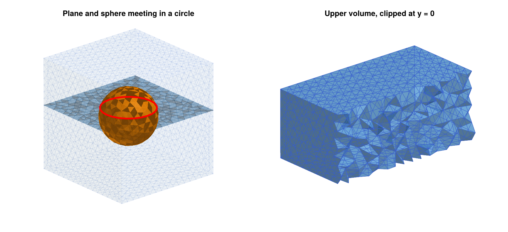
Individual pieces can be accessed through their entities. For example, the upper cap of the sphere is the sphere piece whose center of mass lies above the plane:
caps = gmsh.model.getEntitiesForPhysicalGroup(2, pg_sphere)
topcap = [t for t in caps if gmsh.model.occ.getCenterOfMass(2, t)[3] > 0.3][1]
top = gmsh_marker_cells(ec, 2, topcap; physical=false)
homology(lefschetz_subcomplex(ec, top)) # [1, 0, 0]
toptri = gmsh_marker_cells(ec, 2, topcap; physical=false, closure=false)
unique(ec.dimensions[toptri]), length(toptri) # ([2], 206)Finding the intersection circle as an entity is slightly more involved, since the OpenCASCADE sphere has a seam, i.e., a meridian curve along which the parametrization of the sphere is glued. Its pieces belong to the boundary of the caps as well. The intersection circle is the curve which the two caps have in common:
capcurves(t) = Set(c for (d, c) in gmsh.model.getBoundary([(2, t)], false, false))
circle_tags = collect(intersect(capcurves(caps[1]), capcurves(caps[2])))
circle2 = gmsh_marker_cells(ec, 1, circle_tags[1]; physical=false)
sort(circle2) == sort(circle_cells) # trueSince oriented is false, the curve tags are returned without orientation signs, so that the tags of the two caps can be compared directly. In most cases, however, it is simpler to work with the cell lists of the physical groups and their intersections, as above.
What happens behind the scenes. The function gmsh_common_refinement is a thin wrapper around the OpenCASCADE function gmsh.model.occ.fragment, which splits a list of object entities and a list of tool entities along all their intersections. It returns two values: A vector out with all resulting entities, and a vector outmap, whose k-th entry contains the pieces of the k-th input entity, in the order objects first, then tools. The tags of the pieces depend on the internal bookkeeping of OpenCASCADE, and they should never be hard-coded. In a new model with the same steps 1 and 2, one could therefore replace step 3 by
out, outmap = gmsh.model.occ.fragment([(3, box)], vcat([(2, plane)], sphsurf))
gmsh.model.occ.synchronize()
outmap
# [[(3, 1), (3, 2), (3, 3), (3, 4)], # pieces of the box
# [(2, 3), (2, 14)], # pieces of the plane
# [(2, 13), (2, 7)]] # pieces of the sphere surface
pg_box = gmsh.model.addPhysicalGroup(3, [t for (d, t) in outmap[1] if d == 3])
pg_plane = gmsh.model.addPhysicalGroup(2, [t for (d, t) in outmap[2] if d == 2])
pg_sphere = gmsh.model.addPhysicalGroup(2, [t for m in outmap[3:end] for (d, t) in m
if d == 2])This gives the same mesh and the same physical groups, except that the groups have no names. Here, outmap[3:end] collects the pieces of all boundary surfaces of the sphere, so that the code does not depend on the number of surfaces that form the sphere boundary. The wrapper performs exactly this bookkeeping for any number of objects, which is less error-prone, in particular if objects consist of several entities.
Restricting the Mesh to Parts of the Model
The optional argument physical=(pdim, ptag) of gmsh_to_simplicial converts only the elements of a physical group. Its dimension has to agree with dim. Continuing the example above, the following commands extract the mesh of the upper part of the box, which is shown in the right panel of the figure of the plane and the sphere intersecting in a circle, and the sphere as a surface complex:
ecu = gmsh_to_simplicial(physical=(3, pg_upper))
lefschetz_cell_count(ecu) # [2032, 11917, 18621, 8735]
homology(ecu) # [1, 0, 0, 0]
ecsph = gmsh_to_simplicial(dim=2, physical=(2, pg_sphere))
homology(ecsph) # [1, 0, 1]
gmsh_to_simplicial(physical=(2, pg_sphere))
# ERROR: ArgumentError: gmsh_to_simplicial: the physical group needs to
# have dimension dimOf course, the cells of the upper part could also be found within the complete complex ec with gmsh_marker_cells(ec, 3, pg_upper). The difference is that gmsh_to_simplicial creates a new complex with its own labels, while gmsh_marker_cells returns cell indices in the given complex.
We finish the example by saving the mesh to a file, which is used again in the next section, and by ending the Gmsh session:
gmsh.option.setNumber("Mesh.SaveAll", 1)
gmsh.write("intersecting.msh")
gmsh.finalize()The option Mesh.SaveAll is explained at the end of the next section.
Reading Files
Gmsh reads geometry files in its own .geo scripting language, CAD files such as STEP or IGES, and mesh files in the .msh format and many others. The function gmsh_file_to_simplicial opens any such file, generates a mesh if the file does not contain elements of the requested dimension, and converts the mesh. For example, the following .geo file describes a ball of radius 2, together with a mesh size:
SetFactory("OpenCASCADE");
Sphere(1) = {0, 0, 0, 2};
Mesh.MeshSizeMax = 0.3;If it is saved as ball.geo, then
ecb = gmsh_file_to_simplicial("ball.geo")
lefschetz_cell_count(ecb) # [1344, 8079, 12777, 6041]
homology(ecb) # [1, 0, 0, 0]
homology(gmsh_file_to_simplicial("ball.geo"; dim=2)) # [1, 0, 1]creates a tetrahedral mesh of the ball, and a triangulation of its boundary sphere. Since Gmsh is not running at this point, the function initializes it and finalizes it at the end, so no other Gmsh commands are needed.
If Gmsh is already running, the file is opened in the running session. This creates a new model, which becomes the current model, while the previous models remain available, see gmsh.model.list() and gmsh.model.setCurrent. The new model also remains available after the conversion, including the physical groups stored in a mesh file. This allows the use of gmsh_marker_cells after reading a file. For example, the mesh of the intersecting surfaces which was saved at the end of the previous section can be read and analyzed as follows:
gmsh.initialize()
ecm = gmsh_file_to_simplicial("intersecting.msh")
lefschetz_cell_count(ecm) # [4335, 26847, 43139, 20626]
gmsh.model.getPhysicalGroups() # [(2, 2), (2, 3), (3, 1), (3, 4)]
gmsh.model.getPhysicalName(2, 3) # "sphere"
homology(lefschetz_subcomplex(ecm, gmsh_marker_cells(ecm, 2, 3))) # [1, 0, 1]
gmsh.finalize()The physical groups are numbered in the order in which they were created, i.e., the box, the plane, and the sphere by gmsh_common_refinement, and the upper part of the box afterwards. Their tags are therefore 1 to 4, and each tag comes with the dimension of its group.
As soon as a model contains physical groups, Gmsh by default only saves the elements which belong to some physical group. In the example above, all tetrahedra belong to the physical group of the box which was created by gmsh_common_refinement, so the complete tetrahedral mesh would be saved even without the option Mesh.SaveAll. If the only three-dimensional physical group were the upper part of the box, however, the file would only contain the tetrahedra of this part. To be on the safe side, either set Mesh.SaveAll to 1 as above, or define physical groups for all volumes.
Common Refinements of Several Objects
The function gmsh_common_refinement accepts any number of objects of dimensions 0 to 3, i.e., volumes, surfaces, curves, and single points. All of them are refined together, so that the mesh of every object is a subcomplex, and the intersection of any two objects is the intersection of their subcomplexes. As a second example, consider two unit spheres around the points (-1/2, 0, 0) and (1/2, 0, 0), which intersect in a circle in the plane x = 0, together with the segment of the x-axis from -1.9 to 1.9, which crosses both spheres twice. The segment is a curve, i.e., an entity of dimension 1, which is created from its two endpoints:
gmsh.initialize()
gmsh.option.setNumber("General.Terminal", 0)
gmsh.model.add("twospheres")
function spheresurface(x, y, z, r)
s = gmsh.model.occ.addSphere(x, y, z, r)
gmsh.model.occ.synchronize()
bnd = gmsh.model.getBoundary([(3, s)], false, false)
gmsh.model.occ.remove([(3, s)])
return bnd
end
box = gmsh.model.occ.addBox(-2, -2, -2, 4, 4, 4)
left = spheresurface(-0.5, 0, 0, 1.0)
right = spheresurface( 0.5, 0, 0, 1.0)
axis = gmsh.model.occ.addLine(gmsh.model.occ.addPoint(-1.9, 0, 0),
gmsh.model.occ.addPoint( 1.9, 0, 0))
pgs = gmsh_common_refinement([(3, box), left, right, (1, axis)])
gmsh.option.setNumber("Mesh.MeshSizeMax", 0.25)
gmsh.model.mesh.generate(3)
ec2 = gmsh_to_simplicial()
lefschetz_cell_count(ec2) # [4303, 26845, 43256, 20713]
cl = gmsh_marker_cells(ec2, 2, pgs[2]) # left sphere
cr = gmsh_marker_cells(ec2, 2, pgs[3]) # right sphere
ca = gmsh_marker_cells(ec2, 1, pgs[4]) # axis
homology(lefschetz_subcomplex(ec2, cl)) # [1, 0, 1]
homology(lefschetz_subcomplex(ec2, intersect(cl, cr))) # [1, 1]
homology(lefschetz_subcomplex(ec2, union(cl, cr))) # [1, 0, 3]
homology(lefschetz_subcomplex(ec2, ca)) # [1, 0]
crossings = intersect(ca, union(cl, cr))
sort([ec2.coords[k][1][1] for k in crossings]) # [-1.5, -0.5, 0.5, 1.5]Both spheres are subcomplexes with the homology of a sphere, and their intersection is a circle. Their union consists of four disks, namely the two caps of each sphere, which are glued along the common circle. It therefore encloses three cavities, which explains the Betti number b2 = 3. The axis is a chain of edges of the mesh, and it meets the spheres in exactly four vertices, at the four points where the segment crosses them. Since the segment was refined together with the spheres, these crossing points are vertices of the mesh, and not just points somewhere inside of triangles.
Volumes can be used as objects as well. They are the natural way to describe regions, in which, for example, a vector field has a known behavior. Moreover, an object does not have to lie inside of the box. In the following example, the plane is larger than the box, and the solid unit ball is a region:
gmsh.model.add("region")
box = gmsh.model.occ.addBox(-2, -2, -2, 4, 4, 4)
plane = gmsh.model.occ.addRectangle(-3, -3, 0.2, 6, 6)
ball = gmsh.model.occ.addSphere(0, 0, 0, 1.0)
pg_box, pg_plane, pg_ball = gmsh_common_refinement([(3, box), (2, plane), (3, ball)])
gmsh.option.setNumber("Mesh.MeshSizeMax", 0.4)
gmsh.model.mesh.generate(3)
ec3 = gmsh_to_simplicial()
plane_cells = gmsh_marker_cells(ec3, 2, pg_plane)
ball_cells = gmsh_marker_cells(ec3, 3, pg_ball)
homology(lefschetz_subcomplex(ec3, ball_cells)) # [1, 0, 0, 0]
homology(lefschetz_subcomplex(ec3, intersect(plane_cells, ball_cells))) # [1, 0, 0]
maximum(maximum(abs.(ec3.coords[k][1])) for k in plane_cells) # 2.0The cells of the ball form a closed subcomplex, and the intersection of the ball with the plane is a disk. The part of the plane outside of the box is split off by the refinement and meshed only as a surface. Since it does not belong to any tetrahedron, it is not part of the complex, and gmsh_marker_cells ignores it, so that all vertices of plane_cells lie in the box.
Both examples are shown in the figure of the common refinements of several objects. In the left panel, the two spheres are drawn in blue and orange, their intersection circle in red, and the axis together with its four crossing points in black. The right panel shows the second mesh clipped at the plane y = 0, with the ball region in orange and the plane in blue.
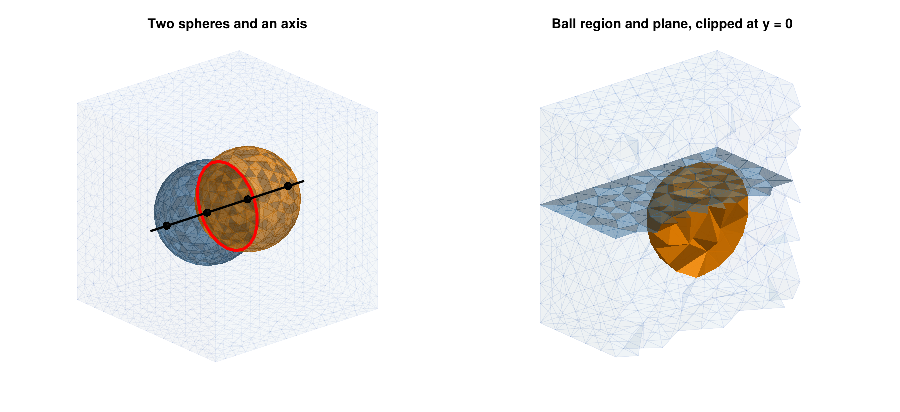
In applications, surfaces are often only known as triangulations, for example as the output of the trisurface_* functions, or as read from an STL file. Such a surface can be added to the model with gmsh_add_trisurface. It turns every triangle into a flat surface of gmsh.model.occ, where adjacent triangles share their points and edges, so that the surface is the piecewise linear interpolation of its vertices. The function returns the vector of these surfaces, which is one object of gmsh_common_refinement. As a third example, consider a box which contains the unit sphere, a rectangle in the plane x = 0.4, and a triangulation of the paraboloid z = -0.6 + (x^2 + y^2)/2 over the square [-1.5, 1.5]^2. The rectangle is created in a horizontal plane, then rotated by ninety degrees around the y-axis, and finally moved to the plane x = 0.4:
gmsh.model.add("paraboloid")
fpar(x, y) = -0.6 + 0.5*(x^2 + y^2)
Vp, Tp = trisurface_parametric((x, y) -> [x, y, fpar(x, y)],
(-1.5, 1.5), (-1.5, 1.5), 12, 12)
box = gmsh.model.occ.addBox(-2, -2, -2, 4, 4, 4)
sphere = spheresurface(0, 0, 0, 1.0)
rect = gmsh.model.occ.addRectangle(-1.6, -1.6, 0, 3.2, 3.2)
gmsh.model.occ.rotate([(2, rect)], 0, 0, 0, 0, 1, 0, pi/2)
gmsh.model.occ.translate([(2, rect)], 0.4, 0, 0)
parab = gmsh_add_trisurface(Vp, Tp)
length(parab) # 288
pgs = gmsh_common_refinement([(3, box), sphere, (2, rect), parab])
gmsh.option.setNumber("Mesh.MeshSizeMax", 0.25)
gmsh.model.mesh.generate(3)
ec4 = gmsh_to_simplicial()
lefschetz_cell_count(ec4) # [6114, 39797, 65538, 31854]
cs = gmsh_marker_cells(ec4, 2, pgs[2]) # sphere
cr = gmsh_marker_cells(ec4, 2, pgs[3]) # rectangle
cp = gmsh_marker_cells(ec4, 2, pgs[4]) # paraboloid
gmsh.finalize()
homology(lefschetz_subcomplex(ec4, cp)) # [1, 0, 0]
homology(lefschetz_subcomplex(ec4, intersect(cs, cr))) # [1, 1]
homology(lefschetz_subcomplex(ec4, intersect(cs, cp))) # [1, 1]
homology(lefschetz_subcomplex(ec4, intersect(cr, cp))) # [1, 0]
triple = intersect(cs, cr, cp)
[round.(ec4.coords[k][1]; digits=3) for k in triple]
# 2-element Vector{Vector{Float64}}:
# [0.4, -0.912, -0.089]
# [0.4, 0.912, -0.089]The 12 x 12 grid of the parameter square gives 288 triangles, and thus 288 surfaces of the model. After the refinement, the paraboloid is a disk. It meets the sphere in a closed curve, and the rectangle in an arc of a parabola, while the sphere and the rectangle meet in a circle. All three surfaces have exactly two points in common. For the smooth paraboloid, these points would be (0.4, -0.910, -0.106) and (0.4, 0.910, -0.106), but the piecewise linear interpolation of a convex function lies above the function, so that the points of the triangulated paraboloid are slightly higher. On the other hand, every edge of the triangulation becomes a curve of the model, and the mesh has to contain it as a chain of edges. The mesh near a triangulated surface is therefore at least as fine as the triangulation, regardless of Mesh.MeshSizeMax. In our example, the mesh has about a third more vertices than with a smooth paraboloid, and with a 48 x 48 grid, it has almost three times as many.
The figure of the common refinement of a sphere, a rectangle, and a triangulated paraboloid shows the result. In the left panel, the sphere is drawn in orange, the rectangle in blue, and the paraboloid in green, together with the three intersection curves in red and the two common points in black. The right panel shows the tetrahedral mesh, clipped at the plane y = 0, together with the three surfaces.
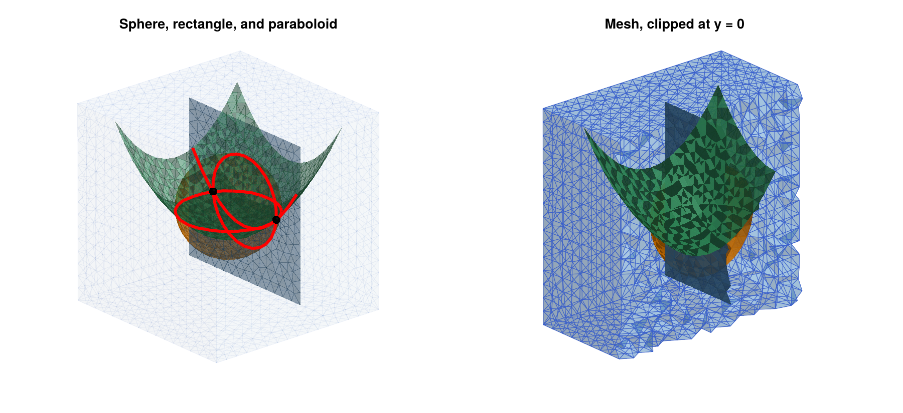
The following remarks summarize how common refinements are used in practice:
- Describing the objects. Constraint surfaces and regions have to be created as CAD entities with the functions in
gmsh.model.occ, or, for triangulated surfaces, withgmsh_add_trisurface, see the next remark. The functions ingmsh.model.occincludeaddBox,addSphere,addCylinder,addCone,addTorus, andaddWedgefor solids,addRectangleandaddDiskfor planar surfaces, andaddPoint,addLine,addCircle, andaddSplinefor points and curves. The surface of a solid is obtained withgetBoundary, as for the spheres above. Curved surfaces which are not of this form can be created, for example, withaddBSplineSurface,addSurfaceFilling, oraddThruSections, and CAD files in the STEP or IGES format can be loaded withgmsh.model.occ.importShapes. See theGmshdocumentation for details. - Triangulated surfaces. The surfaces created by the
trisurface_*functions, or read from STL files, are triangulations, not CAD entities. They can be added to the model withgmsh_add_trisurface, as for the paraboloid above. Since every triangle becomes a surface of the model, and every edge a curve, this is slower than a CAD entity for fine triangulations, and it forces a fine mesh. If an analytic description is available, as for spheres, cylinders, and tori, use the corresponding CAD function instead. - Positioning. Entities can be moved and rotated with
gmsh.model.occ.translateandgmsh.model.occ.rotate, for examplegmsh.model.occ.rotate([(2, plane)], 0, 0, 0, 1, 0, 0, pi/2)rotates a plane by ninety degrees around thex-axis through the origin. - Mesh size. The intersection curves are meshed like all other curves, so their edges have length at most
Mesh.MeshSizeMax. If two objects intersect at a very small angle, or if they are very close to each other without intersecting,Gmshneeds small elements to resolve the geometry, which can lead to large meshes. - Using the cells. The cell lists returned by
gmsh_marker_cellsare closed subcomplexes. Their unions and intersections, computed withunionandintersect, are again closed, and they can be used as exit sets, as arguments ofrelative_homology, or to restrict a multivector field to a part of the mesh.
Mesh Sizes and Other Options
The size of a Gmsh mesh is controlled by options, which are set with gmsh.option.setNumber before calling gmsh.model.mesh.generate. The most important ones are Mesh.MeshSizeMax and Mesh.MeshSizeMin, which bound the edge lengths of the mesh, and Mesh.MeshSizeFromCurvature, which sets the number of elements per 2*pi of curvature on curved surfaces. Local refinement is possible with mesh size fields, which are described in the Gmsh documentation. Unlike TetGen, Gmsh controls edge lengths rather than volumes. In the examples of this section, a mesh with maximal edge length h has roughly 5/h^3 tetrahedra per unit volume, and about five times as many cells in total. This is useful for estimating the size of a complex before creating it.
For complicated configurations, for example with many intersection curves close to each other, the three-dimensional mesher of Gmsh can fail with messages such as PLC Error: Two facets intersect at point. The reason is usually a surface mesh which is too coarse for the geometry, and a smaller value of Mesh.MeshSizeMax typically resolves the problem. In our tests with random configurations of spheres and planes in a box, about one in twenty-five configurations failed with the mesh size 0.3, and a failing configuration could be meshed with 0.25. After such a failure, the Gmsh session has to be restarted with gmsh.finalize() and gmsh.initialize(), since later calls of gmsh.model.mesh.generate in the same session do not create any tetrahedra. Other choices of the three-dimensional meshing algorithm, which is selected with the option Mesh.Algorithm3D, can also fail silently and leave some volumes without tetrahedra. In this case, gmsh_to_simplicial prints a warning, since the complex then has holes which are not part of the geometry.
Complete Example: A Periodic Orbit in a Ball
As a final example, we analyze a vector field with an attracting periodic orbit on a curved domain. The vector field
\[\dot{x}_1 = x_1 - \tfrac{1}{2} x_2 - x_1 (x_1^2 + x_2^2) , \qquad \dot{x}_2 = \tfrac{1}{2} x_1 + x_2 - x_2 (x_1^2 + x_2^2) , \qquad \dot{x}_3 = -x_3\]
has an attracting periodic orbit, the unit circle in the plane x_3 = 0, and an equilibrium at the origin with a two-dimensional unstable manifold, which is the open unit disk in the same plane. The ball of radius 2 is a trapping region. We mesh it with Gmsh and compute the connection matrix:
using Gmsh: gmsh
using ConleyDynamics
function cyclevf(x::Vector{Float64})
x1, x2, x3 = x
r2 = x1*x1 + x2*x2
return [x1 - 0.5*x2 - x1*r2, 0.5*x1 + x2 - x2*r2, -x3]
end
gmsh.initialize()
gmsh.option.setNumber("General.Terminal", 0)
gmsh.model.occ.addSphere(0, 0, 0, 2.0)
gmsh.model.occ.synchronize()
gmsh.option.setNumber("Mesh.MeshSizeMax", 0.2)
gmsh.model.mesh.generate(3)
ecb = gmsh_to_simplicial()
gmsh.finalize()
ecb.ncells # 92169
mvfb = create_spatial_mvf(ecb, cyclevf)
cmb = connection_matrix(ecb, mvfb)
cmb.conley
# 2-element Vector{Vector{Int64}}:
# [1, 1, 0, 0]
# [0, 0, 1, 0]
full_from_sparse(cmb.matrix)
# 3×3 Matrix{Int64}:
# 0 0 0
# 0 0 1
# 0 0 0The Morse decomposition consists of two Morse sets. The first one has the Conley index [1, 1, 0, 0] of an attracting periodic orbit, which agrees with the homology of a circle, and the second one has the Conley index [0, 0, 1, 0] of an equilibrium with a two-dimensional unstable manifold. The connection matrix has three rows and columns, one for each nonzero entry of the two Conley indices. Its nonzero entry in row 2 and column 3 connects the two-dimensional entry of the equilibrium with the one-dimensional entry of the periodic orbit, and records the connection from the equilibrium to the periodic orbit. The computation takes a few seconds. The Morse sets are shown in the figure of the Morse sets of the vector field with a periodic orbit in a ball. The right panel shows the lower half of the ball from above. The Morse set of the periodic orbit is a solid torus around the unit circle, and the small Morse set of the equilibrium lies in its hole, separated from it by a gap. With a coarser mesh size of 0.3, the multivector field is not fine enough to separate the two invariant sets, and one obtains a single Morse set with the Conley index of an attractor.
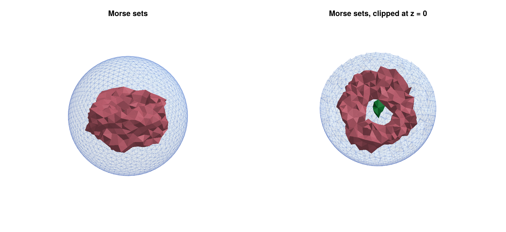
Licences of the Meshing Backends
ConleyDynamics.jl itself is distributed under the MIT licence. The meshing backends TetGen.jl and Gmsh.jl are optional weak dependencies, which have to be installed and loaded separately by the user, and they are distributed under different licences:
- TetGen is distributed under the GNU Affero General Public License, version 3 (AGPLv3). Commercial licences are available from its author.
- Gmsh is distributed under the GNU General Public License, version 2 or later, with some exceptions described on its web page.
For computations and publications based on the generated meshes, these licences place no restrictions on the user. However, anyone who redistributes software which includes or links to TetGen or Gmsh should check the respective licence terms.